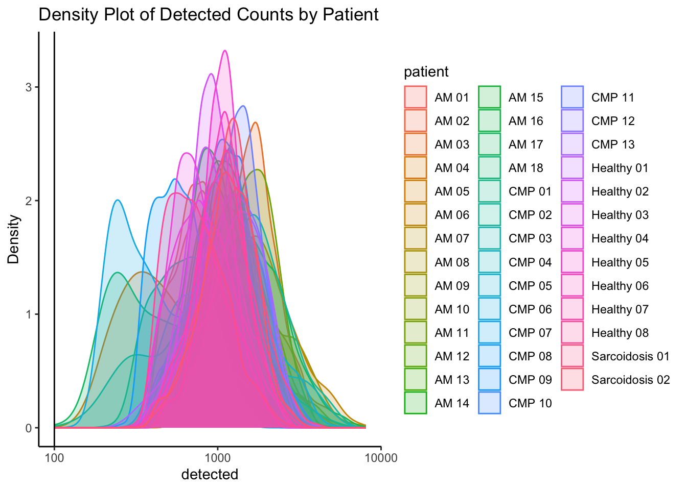
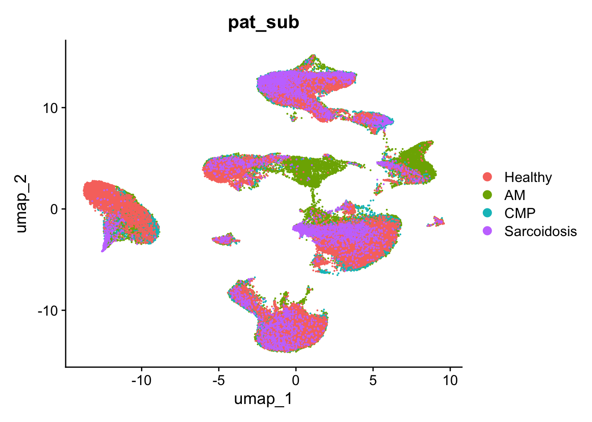
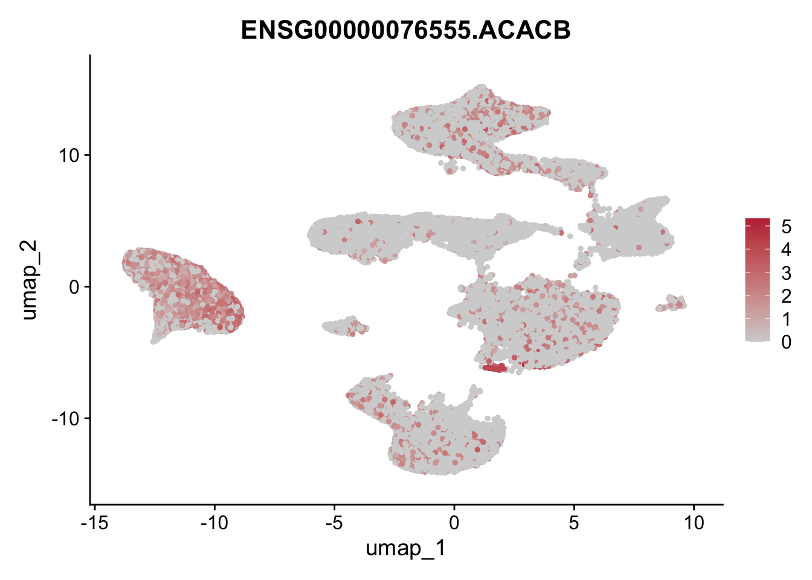
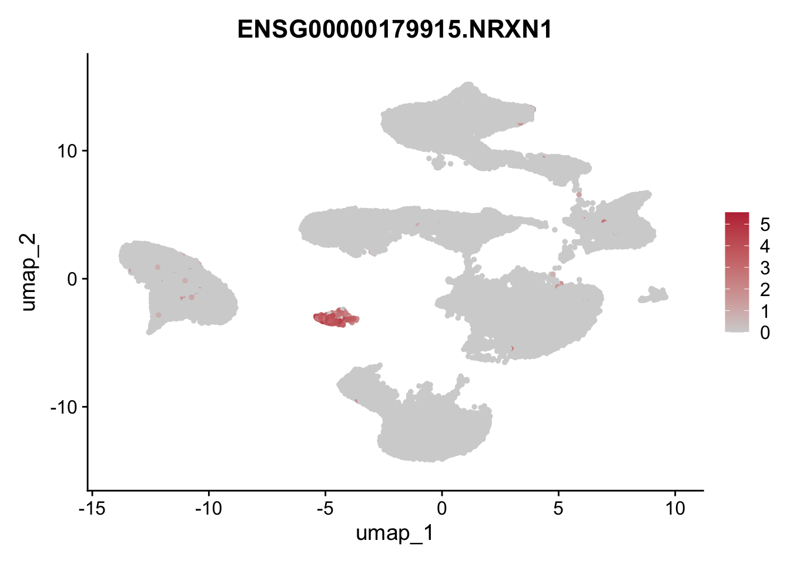
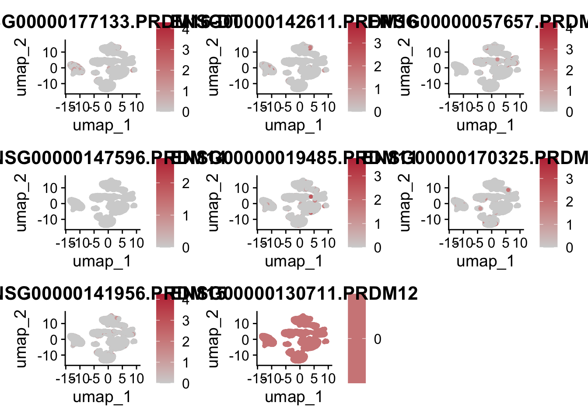

Myocarditis snRNAseq QC, Merging and Marker Genes
Emily Payne
2024-09-09
Last updated: 2024-11-13
Checks: 5 2
Knit directory: Myocarditis
snRNAseq/analysis/
This reproducible R Markdown analysis was created with workflowr (version 1.7.1). The Checks tab describes the reproducibility checks that were applied when the results were created. The Past versions tab lists the development history.
The R Markdown is untracked by Git. To know which version of the R
Markdown file created these results, you’ll want to first commit it to
the Git repo. If you’re still working on the analysis, you can ignore
this warning. When you’re finished, you can run
wflow_publish to commit the R Markdown file and build the
HTML.
Great job! The global environment was empty. Objects defined in the global environment can affect the analysis in your R Markdown file in unknown ways. For reproduciblity it’s best to always run the code in an empty environment.
The command set.seed(12345) was run prior to running the
code in the R Markdown file. Setting a seed ensures that any results
that rely on randomness, e.g. subsampling or permutations, are
reproducible.
Great job! Recording the operating system, R version, and package versions is critical for reproducibility.
Nice! There were no cached chunks for this analysis, so you can be confident that you successfully produced the results during this run.
Using absolute paths to the files within your workflowr project makes it difficult for you and others to run your code on a different machine. Change the absolute path(s) below to the suggested relative path(s) to make your code more reproducible.
| absolute | relative |
|---|---|
| /Users/immbio/Desktop/Emily/Myocarditis snRNAseq/data/AM | ../data/AM |
| /Users/immbio/Desktop/Emily/Myocarditis snRNAseq/data/Berlin | ../data/Berlin |
| /Users/immbio/Desktop/Emily/Myocarditis snRNAseq/data/CM | ../data/CM |
| /Users/immbio/Desktop/Emily/Myocarditis snRNAseq/data/Healthy | ../data/Healthy |
| /Users/immbio/Desktop/Emily/Myocarditis snRNAseq/data/Sarcoidosis | ../data/Sarcoidosis |
| /Users/immbio/Desktop/Emily/Myocarditis snRNAseq/data/01 Merged Seurat files/Myocarditis_allfiltered_19.09.24.rds | ../data/01 Merged Seurat files/Myocarditis_allfiltered_19.09.24.rds |
| /Users/immbio/Desktop/Emily/Myocarditis snRNAseq/docs/Markers_all_filtered_25_09_24 | ../docs/Markers_all_filtered_25_09_24 |
| /Users/immbio/Desktop/Emily/Myocarditis snRNAseq/data/01 Merged Seurat files/Myocarditis_HH2_HH3_removed_V2_26.09.2024.rds | ../data/01 Merged Seurat files/Myocarditis_HH2_HH3_removed_V2_26.09.2024.rds |
Great! You are using Git for version control. Tracking code development and connecting the code version to the results is critical for reproducibility.
The results in this page were generated with repository version d254b0c. See the Past versions tab to see a history of the changes made to the R Markdown and HTML files.
Note that you need to be careful to ensure that all relevant files for
the analysis have been committed to Git prior to generating the results
(you can use wflow_publish or
wflow_git_commit). workflowr only checks the R Markdown
file, but you know if there are other scripts or data files that it
depends on. Below is the status of the Git repository when the results
were generated:
Ignored files:
Ignored: .DS_Store
Ignored: .Rhistory
Ignored: .Rproj.user/
Ignored: analysis/.DS_Store
Ignored: analysis/.Rhistory
Ignored: data/01 Merged Seurat files/
Ignored: data/AM/
Ignored: data/Berlin/
Ignored: data/CM/
Ignored: data/Healthy/
Ignored: data/Sarcoidosis/
Untracked files:
Untracked: analysis/DE genes by patientV3.Rmd
Untracked: analysis/Fibroblast subset V2 reclustering.Rmd
Untracked: analysis/Immune_cells.Rmd
Untracked: analysis/Myocarditis_snRNAseq_QC_merging_V3.Rmd
Untracked: analysis/Relative-AbundancesV2.Rmd
Untracked: analysis/Relative_AbundancesV2.Rmd
Untracked: analysis/SingleCellBrowserSeurat3_plotly.R
Untracked: analysis/Stratification_sex.Rmd
Unstaged changes:
Modified: analysis/DE Genes by Disease Condition.Rmd
Deleted: analysis/Myocarditis snRNAseq QC and merging_V2.Rmd
Deleted: analysis/Myocarditis snRNAseq.Rmd
Deleted: analysis/Relative AbundancesV2.Rmd
Modified: analysis/Stratification AM by sex.Rmd
Modified: analysis/Stratification by T cell condition and DE genes.Rmd
Deleted: analysis/license.Rmd
Deleted: data/README.md
Note that any generated files, e.g. HTML, png, CSS, etc., are not included in this status report because it is ok for generated content to have uncommitted changes.
There are no past versions. Publish this analysis with
wflow_publish() to start tracking its development.
``` r
library(ExploreSCdataSeurat3)
library(runSeurat3)
library(Seurat)
library(ggpubr)
library(pheatmap)
library(SingleCellExperiment)
library(dplyr)
library(tidyverse)
library(viridis)
library(muscat)
library(circlize)
library(destiny)
library(scater)
library(metap)
library(multtest)
library(clusterProfiler)
library(org.Hs.eg.db)
library(msigdbr)
library(enrichplot)
library(DOSE)
library(grid)
library(gridExtra)
library(ggupset)
library(VennDiagram)
library(NCmisc)### load files AM and merge
basedir <- "/Users/immbio/Desktop/Emily/Myocarditis snRNAseq/data/AM"
fileNamList <- list.files(path = basedir)
for(i in 1:length(fileNamList)){
seuratS <- readRDS(paste0(basedir,"/", fileNamList[i]))
if(exists("seuratM")){
seuratM <- merge(x = seuratM, y = seuratS)
}else{
seuratM <- seuratS
}
}
##
#
remove(seuratS)
table(seuratM$dataset)
312581_05-5_20230308_Hu_nucseq_SG36_EMB_GEM 312581_06-6_20230308_Hu_nucseq_SG37_EMB_GEM
4323 1123
312581_07-7_20230308_Hu_nucseq_SG38_EMB_GEM 347741_6-6_20240326_Hu_nucseq_Immpath_AM39_0
1203 350
348751_1-6_20240326_Hu_nucseq_Immpath_AM39_0_rep 353921_28-28_20240529_Hu_nucseq_Immpath_EMB18
316 208
353921_31-31_20240529_Hu_nucseq_Immpath_EMB27 353921_32-32_20240529_Hu_nucseq_Immpath_EMB29
579 335
353921_34-34_20240529_Hu_nucseq_Immpath_EMB35 353921_35-35_20240529_Hu_nucseq_Immpath_EMB37
1217 604
359861_16-8_20240730_Hu_nucseq_Immpath_EMB47 359861_17-9_20240730_Hu_nucseq_Immpath_EMB48
513 426
o27533_1_11-11_20220203_Hu_nucseq_EMB30_GEM o27533_1_12-12_20220203_Hu_nucseq_EMB31_GEM
1242 236
o27936_1_7-7_20220309_Hu_nucseq_EMB32_GEM o28576_1_01-1_20220525_Hu_nucseq_Graz_1_EMB_GEM
1192 2740
o28576_1_02-2_20220525_Hu_nucseq_Graz_2_EMB_GEM o292731_3-3_20220818_Hu_nucseq_SG_33_EMB_GEM
1684 6286
o294781_06-6_20220912_Hu_nucseq_Graz_15_EMB_GEM
4439 table(seuratM$orig.ident)
29016 ### load files Berlin and merge
basedir <- "/Users/immbio/Desktop/Emily/Myocarditis snRNAseq/data/Berlin"
fileNamList <- list.files(path = basedir)
for(i in 1:length(fileNamList)){
seuratS <- readRDS(paste0(basedir, "/", fileNamList[i]))
if(exists("seuratM")){
seuratM <- merge(x = seuratM, y = seuratS)
}else{
seuratM <- seuratS
}
}
##
#
remove(seuratS)
table(seuratM$dataset)
312581_05-5_20230308_Hu_nucseq_SG36_EMB_GEM 312581_06-6_20230308_Hu_nucseq_SG37_EMB_GEM
4323 1123
312581_07-7_20230308_Hu_nucseq_SG38_EMB_GEM 347741_6-6_20240326_Hu_nucseq_Immpath_AM39_0
1203 350
348751_1-6_20240326_Hu_nucseq_Immpath_AM39_0_rep 353921_28-28_20240529_Hu_nucseq_Immpath_EMB18
316 208
353921_31-31_20240529_Hu_nucseq_Immpath_EMB27 353921_32-32_20240529_Hu_nucseq_Immpath_EMB29
579 335
353921_34-34_20240529_Hu_nucseq_Immpath_EMB35 353921_35-35_20240529_Hu_nucseq_Immpath_EMB37
1217 604
359861_09-11_20240723_Hu_nucseq_Ber_Pat5_EM979_1 359861_10-13_20240723_Hu_nucseq_Ber_Pat5_EM979_2
771 1476
359861_11-1_20240730_Hu_nucseq_Ber_Pat1_EMB1537 359861_12-2_20240730_Hu_nucseq_Ber_Pat2_EMB1041
316 608
359861_13-5_20240730_Hu_nucseq_Ber_Pat6_EMB1235 359861_14-6_20240730_Hu_nucseq_Ber_Pat7_EMB1383
646 520
359861_15-7_20240730_Hu_nucseq_Ber_Pat8_EMB694 359861_16-8_20240730_Hu_nucseq_Immpath_EMB47
741 513
359861_17-9_20240730_Hu_nucseq_Immpath_EMB48 o27533_1_11-11_20220203_Hu_nucseq_EMB30_GEM
426 1242
o27533_1_12-12_20220203_Hu_nucseq_EMB31_GEM o27936_1_7-7_20220309_Hu_nucseq_EMB32_GEM
236 1192
o28576_1_01-1_20220525_Hu_nucseq_Graz_1_EMB_GEM o28576_1_02-2_20220525_Hu_nucseq_Graz_2_EMB_GEM
2740 1684
o292731_3-3_20220818_Hu_nucseq_SG_33_EMB_GEM o294781_06-6_20220912_Hu_nucseq_Graz_15_EMB_GEM
6286 4439 table(seuratM$orig.ident)
34094 ### load files CM and merge
basedir <- "/Users/immbio/Desktop/Emily/Myocarditis snRNAseq/data/CM"
fileNamList <- list.files(path = basedir)
for(i in 1:length(fileNamList)){
seuratS <- readRDS(paste0(basedir, "/", fileNamList[i]))
if(exists("seuratM")){
seuratM <- merge(x = seuratM, y = seuratS)
}else{
seuratM <- seuratS
}
}
##
#
remove(seuratS)
table(seuratM$dataset)
312581_05-5_20230308_Hu_nucseq_SG36_EMB_GEM 312581_06-6_20230308_Hu_nucseq_SG37_EMB_GEM
4323 1123
312581_07-7_20230308_Hu_nucseq_SG38_EMB_GEM 347741_6-6_20240326_Hu_nucseq_Immpath_AM39_0
1203 350
348751_1-6_20240326_Hu_nucseq_Immpath_AM39_0_rep 353921_28-28_20240529_Hu_nucseq_Immpath_EMB18
316 208
353921_29-29_20240529_Hu_nucseq_Immpath_EMB24 353921_30-30_20240529_Hu_nucseq_Immpath_EMB25
105 227
353921_31-31_20240529_Hu_nucseq_Immpath_EMB27 353921_32-32_20240529_Hu_nucseq_Immpath_EMB29
579 335
353921_33-33_20240529_Hu_nucseq_Immpath_EMB30 353921_34-34_20240529_Hu_nucseq_Immpath_EMB35
730 1217
353921_35-35_20240529_Hu_nucseq_Immpath_EMB37 359861_09-11_20240723_Hu_nucseq_Ber_Pat5_EM979_1
604 771
359861_10-13_20240723_Hu_nucseq_Ber_Pat5_EM979_2 359861_11-1_20240730_Hu_nucseq_Ber_Pat1_EMB1537
1476 316
359861_12-2_20240730_Hu_nucseq_Ber_Pat2_EMB1041 359861_13-5_20240730_Hu_nucseq_Ber_Pat6_EMB1235
608 646
359861_14-6_20240730_Hu_nucseq_Ber_Pat7_EMB1383 359861_15-7_20240730_Hu_nucseq_Ber_Pat8_EMB694
520 741
359861_16-8_20240730_Hu_nucseq_Immpath_EMB47 359861_17-9_20240730_Hu_nucseq_Immpath_EMB48
513 426
o27533_1_11-11_20220203_Hu_nucseq_EMB30_GEM o27533_1_12-12_20220203_Hu_nucseq_EMB31_GEM
1242 236
o27936_1_7-7_20220309_Hu_nucseq_EMB32_GEM o28576_1_01-1_20220525_Hu_nucseq_Graz_1_EMB_GEM
1192 2740
o28576_1_02-2_20220525_Hu_nucseq_Graz_2_EMB_GEM o28576_1_03-3_20220525_Hu_nucseq_Graz_3_EMB_GEM
1684 2396
o28576_1_04-4_20220525_Hu_nucseq_Graz_4_EMB_GEM o28576_1_05-5_20220525_Hu_nucseq_Graz_5_EMB_GEM
545 781
o28576_1_06-6_20220525_Hu_nucseq_Graz_6_EMB_GEM o28576_1_07-7_20220525_Hu_nucseq_Graz_7_EMB_GEM
491 653
o28576_1_13-13_20220525_Hu_nucseq_EMB32_GEM o292731_3-3_20220818_Hu_nucseq_SG_33_EMB_GEM
1428 6286
o292731_4-4_20220818_Hu_nucseq_SG_34_EMB_GEM o294781_05-5_20220912_Hu_nucseq_Graz_14_EMB_GEM
620 1268
o294781_06-6_20220912_Hu_nucseq_Graz_15_EMB_GEM o294781_09-9_20220912_Hu_nucseq_Graz_18_EMB_GEM
4439 2280
o294781_10-10_20220912_Hu_nucseq_Graz_19_EMB_GEM
111 table(seuratM$orig.ident)
45729 ### load files from healthy donors and merge
basedir <- "/Users/immbio/Desktop/Emily/Myocarditis snRNAseq/data/Healthy"
fileNamList <- list.files(path = basedir)
for(i in 1:length(fileNamList)){
seuratS <- readRDS(paste0(basedir, "/", fileNamList[i]))
if(exists("seuratM")){
seuratM <- merge(x = seuratM, y = seuratS)
}else{
seuratM <- seuratS
}
}
##
#
remove(seuratS)
table(seuratM$dataset)
312581_05-5_20230308_Hu_nucseq_SG36_EMB_GEM 312581_06-6_20230308_Hu_nucseq_SG37_EMB_GEM
4323 1123
312581_07-7_20230308_Hu_nucseq_SG38_EMB_GEM 347741_6-6_20240326_Hu_nucseq_Immpath_AM39_0
1203 350
348751_1-6_20240326_Hu_nucseq_Immpath_AM39_0_rep 353921_28-28_20240529_Hu_nucseq_Immpath_EMB18
316 208
353921_29-29_20240529_Hu_nucseq_Immpath_EMB24 353921_30-30_20240529_Hu_nucseq_Immpath_EMB25
105 227
353921_31-31_20240529_Hu_nucseq_Immpath_EMB27 353921_32-32_20240529_Hu_nucseq_Immpath_EMB29
579 335
353921_33-33_20240529_Hu_nucseq_Immpath_EMB30 353921_34-34_20240529_Hu_nucseq_Immpath_EMB35
730 1217
353921_35-35_20240529_Hu_nucseq_Immpath_EMB37 359861_09-11_20240723_Hu_nucseq_Ber_Pat5_EM979_1
604 771
359861_10-13_20240723_Hu_nucseq_Ber_Pat5_EM979_2 359861_11-1_20240730_Hu_nucseq_Ber_Pat1_EMB1537
1476 316
359861_12-2_20240730_Hu_nucseq_Ber_Pat2_EMB1041 359861_13-5_20240730_Hu_nucseq_Ber_Pat6_EMB1235
608 646
359861_14-6_20240730_Hu_nucseq_Ber_Pat7_EMB1383 359861_15-7_20240730_Hu_nucseq_Ber_Pat8_EMB694
520 741
359861_16-8_20240730_Hu_nucseq_Immpath_EMB47 359861_17-9_20240730_Hu_nucseq_Immpath_EMB48
513 426
o27533_1_11-11_20220203_Hu_nucseq_EMB30_GEM o27533_1_12-12_20220203_Hu_nucseq_EMB31_GEM
1242 236
o27936_1_7-7_20220309_Hu_nucseq_EMB32_GEM o28576_1_01-1_20220525_Hu_nucseq_Graz_1_EMB_GEM
1192 2740
o28576_1_02-2_20220525_Hu_nucseq_Graz_2_EMB_GEM o28576_1_03-3_20220525_Hu_nucseq_Graz_3_EMB_GEM
1684 2396
o28576_1_04-4_20220525_Hu_nucseq_Graz_4_EMB_GEM o28576_1_05-5_20220525_Hu_nucseq_Graz_5_EMB_GEM
545 781
o28576_1_06-6_20220525_Hu_nucseq_Graz_6_EMB_GEM o28576_1_07-7_20220525_Hu_nucseq_Graz_7_EMB_GEM
491 653
o28576_1_08-8_20220525_Hu_nucseq_Graz_8_HH_GEM o28576_1_09-9_20220525_Hu_nucseq_Graz_9_HH_GEM
3921 3707
o28576_1_10-10_20220525_Hu_nucseq_Graz_10_HH_GEM o28576_1_11-11_20220525_Hu_nucseq_Graz_11_HH_GEM
3731 3991
o28576_1_12-12_20220525_Hu_nucseq_Graz_12_HH_GEM o28576_1_13-13_20220525_Hu_nucseq_EMB32_GEM
3818 1428
o292731_1-1_20220818_Hu_nucseq_Graz_9_HH_GEM o292731_2-2_20220818_Hu_nucseq_Graz_13_HH_GEM
4908 9882
o292731_3-3_20220818_Hu_nucseq_SG_33_EMB_GEM o292731_4-4_20220818_Hu_nucseq_SG_34_EMB_GEM
6286 620
o294781_01-1_20220912_Hu_nucseq_Graz_21_HH_GEM o294781_02-2_20220912_Hu_nucseq_Graz_22_HH_GEM
1442 1998
o294781_03-3_20220912_Hu_nucseq_Graz_23_HH_GEM o294781_04-4_20220912_Hu_nucseq_Graz_24_HH_GEM
841 1480
o294781_05-5_20220912_Hu_nucseq_Graz_14_EMB_GEM o294781_06-6_20220912_Hu_nucseq_Graz_15_EMB_GEM
1268 4439
o294781_09-9_20220912_Hu_nucseq_Graz_18_EMB_GEM o294781_10-10_20220912_Hu_nucseq_Graz_19_EMB_GEM
2280 111 table(seuratM$orig.ident)
85448 ## load files from Sarcoidosis patients and merge
basedir <- "/Users/immbio/Desktop/Emily/Myocarditis snRNAseq/data/Sarcoidosis"
fileNamList <- list.files(path = basedir)
for(i in 1:length(fileNamList)){
seuratS <- readRDS(paste0(basedir, "/", fileNamList[i]))
if(exists("seuratM")){
seuratM <- merge(x = seuratM, y = seuratS)
}else{
seuratM <- seuratS
}
}
## total cell count 90517
##
#
remove(seuratS)
table(seuratM$dataset)
312581_05-5_20230308_Hu_nucseq_SG36_EMB_GEM 312581_06-6_20230308_Hu_nucseq_SG37_EMB_GEM
4323 1123
312581_07-7_20230308_Hu_nucseq_SG38_EMB_GEM 347741_6-6_20240326_Hu_nucseq_Immpath_AM39_0
1203 350
348751_1-6_20240326_Hu_nucseq_Immpath_AM39_0_rep 353921_28-28_20240529_Hu_nucseq_Immpath_EMB18
316 208
353921_29-29_20240529_Hu_nucseq_Immpath_EMB24 353921_30-30_20240529_Hu_nucseq_Immpath_EMB25
105 227
353921_31-31_20240529_Hu_nucseq_Immpath_EMB27 353921_32-32_20240529_Hu_nucseq_Immpath_EMB29
579 335
353921_33-33_20240529_Hu_nucseq_Immpath_EMB30 353921_34-34_20240529_Hu_nucseq_Immpath_EMB35
730 1217
353921_35-35_20240529_Hu_nucseq_Immpath_EMB37 359861_09-11_20240723_Hu_nucseq_Ber_Pat5_EM979_1
604 771
359861_10-13_20240723_Hu_nucseq_Ber_Pat5_EM979_2 359861_11-1_20240730_Hu_nucseq_Ber_Pat1_EMB1537
1476 316
359861_12-2_20240730_Hu_nucseq_Ber_Pat2_EMB1041 359861_13-5_20240730_Hu_nucseq_Ber_Pat6_EMB1235
608 646
359861_14-6_20240730_Hu_nucseq_Ber_Pat7_EMB1383 359861_15-7_20240730_Hu_nucseq_Ber_Pat8_EMB694
520 741
359861_16-8_20240730_Hu_nucseq_Immpath_EMB47 359861_17-9_20240730_Hu_nucseq_Immpath_EMB48
513 426
o27533_1_11-11_20220203_Hu_nucseq_EMB30_GEM o27533_1_12-12_20220203_Hu_nucseq_EMB31_GEM
1242 236
o27936_1_7-7_20220309_Hu_nucseq_EMB32_GEM o28576_1_01-1_20220525_Hu_nucseq_Graz_1_EMB_GEM
1192 2740
o28576_1_02-2_20220525_Hu_nucseq_Graz_2_EMB_GEM o28576_1_03-3_20220525_Hu_nucseq_Graz_3_EMB_GEM
1684 2396
o28576_1_04-4_20220525_Hu_nucseq_Graz_4_EMB_GEM o28576_1_05-5_20220525_Hu_nucseq_Graz_5_EMB_GEM
545 781
o28576_1_06-6_20220525_Hu_nucseq_Graz_6_EMB_GEM o28576_1_07-7_20220525_Hu_nucseq_Graz_7_EMB_GEM
491 653
o28576_1_08-8_20220525_Hu_nucseq_Graz_8_HH_GEM o28576_1_09-9_20220525_Hu_nucseq_Graz_9_HH_GEM
3921 3707
o28576_1_10-10_20220525_Hu_nucseq_Graz_10_HH_GEM o28576_1_11-11_20220525_Hu_nucseq_Graz_11_HH_GEM
3731 3991
o28576_1_12-12_20220525_Hu_nucseq_Graz_12_HH_GEM o28576_1_13-13_20220525_Hu_nucseq_EMB32_GEM
3818 1428
o292731_1-1_20220818_Hu_nucseq_Graz_9_HH_GEM o292731_2-2_20220818_Hu_nucseq_Graz_13_HH_GEM
4908 9882
o292731_3-3_20220818_Hu_nucseq_SG_33_EMB_GEM o292731_4-4_20220818_Hu_nucseq_SG_34_EMB_GEM
6286 620
o292731_5-5_20220818_Hu_nucseq_SG_35_EMB_GEM o294781_01-1_20220912_Hu_nucseq_Graz_21_HH_GEM
2363 1442
o294781_02-2_20220912_Hu_nucseq_Graz_22_HH_GEM o294781_03-3_20220912_Hu_nucseq_Graz_23_HH_GEM
1998 841
o294781_04-4_20220912_Hu_nucseq_Graz_24_HH_GEM o294781_05-5_20220912_Hu_nucseq_Graz_14_EMB_GEM
1480 1268
o294781_06-6_20220912_Hu_nucseq_Graz_15_EMB_GEM o294781_09-9_20220912_Hu_nucseq_Graz_18_EMB_GEM
4439 2280
o294781_10-10_20220912_Hu_nucseq_Graz_19_EMB_GEM o294781_11-11_20220912_Hu_nucseq_Graz_20_EMB_GEM
111 2706 table(seuratM$orig.ident)
90517 #### Load all seurat files. Name patient_ID and allocate to condition
### Healthy heart
HH_1 <- c("o28576_1_08-8_20220525_Hu_nucseq_Graz_8_HH_GEM")
HH_2 <- c("o28576_1_10-10_20220525_Hu_nucseq_Graz_10_HH_GEM")
HH_3 <- c("o28576_1_11-11_20220525_Hu_nucseq_Graz_11_HH_GEM")
HH_4 <- c("o28576_1_12-12_20220525_Hu_nucseq_Graz_12_HH_GEM")
HH_5 <- c("o292731_1-1_20220818_Hu_nucseq_Graz_9_HH_GEM")
HH_6 <- c("o292731_2-2_20220818_Hu_nucseq_Graz_13_HH_GEM")
HH_7 <- c("o294781_01-1_20220912_Hu_nucseq_Graz_21_HH_GEM")
HH_8 <- c("o294781_02-2_20220912_Hu_nucseq_Graz_22_HH_GEM")
HH_9 <- c("o294781_03-3_20220912_Hu_nucseq_Graz_23_HH_GEM")
HH_10 <- c("o294781_04-4_20220912_Hu_nucseq_Graz_24_HH_GEM")
HH_11 <- c("o28576_1_09-9_20220525_Hu_nucseq_Graz_9_HH_GEM")
## AM # 39 bad quality remove later
Immpath_2 <- c("o292731_3-3_20220818_Hu_nucseq_SG_33_EMB_GEM")
Immpath_10 <- c("312581_05-5_20230308_Hu_nucseq_SG36_EMB_GEM")
Immpath_12 <- c("312581_06-6_20230308_Hu_nucseq_SG37_EMB_GEM")
Immpath_14 <- c("312581_07-7_20230308_Hu_nucseq_SG38_EMB_GEM")
Immpath_18 <- c("353921_28-28_20240529_Hu_nucseq_Immpath_EMB18")
Immpath_27 <- c("353921_31-31_20240529_Hu_nucseq_Immpath_EMB27")
Immpath_29 <- c("353921_32-32_20240529_Hu_nucseq_Immpath_EMB29")
Immpath_35 <- c("353921_34-34_20240529_Hu_nucseq_Immpath_EMB35")
Immpath_37 <- c("353921_35-35_20240529_Hu_nucseq_Immpath_EMB37")
Immpath_47 <- c("359861_16-8_20240730_Hu_nucseq_Immpath_EMB47")
Immpath_48 <- c("359861_17-9_20240730_Hu_nucseq_Immpath_EMB48")
Immpath_39 <- c("347741_6-6_20240326_Hu_nucseq_Immpath_AM39_0", "348751_1-6_20240326_Hu_nucseq_Immpath_AM39_0_rep")
pat_NCRGraz1 <- c("o28576_1_01-1_20220525_Hu_nucseq_Graz_1_EMB_GEM")
pat_NCRGraz2 <- c("o28576_1_02-2_20220525_Hu_nucseq_Graz_2_EMB_GEM")
pat_NCRGraz15 <- c("o294781_06-6_20220912_Hu_nucseq_Graz_15_EMB_GEM")
pat_NCR29 <- c("o27533_1_11-11_20220203_Hu_nucseq_EMB30_GEM")
pat_NCR30 <- c("o27533_1_12-12_20220203_Hu_nucseq_EMB31_GEM")
pat_NCR31 <- c("o27936_1_7-7_20220309_Hu_nucseq_EMB32_GEM")
pat_BLn979 <- c("359861_09-11_20240723_Hu_nucseq_Ber_Pat5_EM979_1","359861_10-13_20240723_Hu_nucseq_Ber_Pat5_EM979_2")
pat_BLn1537 <- c("359861_11-1_20240730_Hu_nucseq_Ber_Pat1_EMB1537")
pat_BLn1041 <- c("359861_12-2_20240730_Hu_nucseq_Ber_Pat2_EMB1041")
pat_BLn1235 <- c("359861_13-5_20240730_Hu_nucseq_Ber_Pat6_EMB1235")
pat_BLn1383<- c("359861_14-6_20240730_Hu_nucseq_Ber_Pat7_EMB1383")
pat_BLn694 <- c("359861_15-7_20240730_Hu_nucseq_Ber_Pat8_EMB694")
## CMP
Immpath_24 <- c("353921_29-29_20240529_Hu_nucseq_Immpath_EMB24")
Immpath_25 <- c("353921_30-30_20240529_Hu_nucseq_Immpath_EMB25")
Immpath_30 <- c("353921_33-33_20240529_Hu_nucseq_Immpath_EMB30")
pat_NCR32 <- c ("o28576_1_13-13_20220525_Hu_nucseq_EMB32_GEM")
pat_NCR34 <- c("o292731_4-4_20220818_Hu_nucseq_SG_34_EMB_GEM")
CM_Graz7 <- c("o28576_1_07-7_20220525_Hu_nucseq_Graz_7_EMB_GEM")
CM_Graz14 <- c("o294781_05-5_20220912_Hu_nucseq_Graz_14_EMB_GEM")
CM_Graz18 <- c("o294781_09-9_20220912_Hu_nucseq_Graz_18_EMB_GEM")
CM_Graz3 <- c("o28576_1_03-3_20220525_Hu_nucseq_Graz_3_EMB_GEM")
CM_Graz4 <- c("o28576_1_04-4_20220525_Hu_nucseq_Graz_4_EMB_GEM")
CM_Graz5 <- c("o28576_1_05-5_20220525_Hu_nucseq_Graz_5_EMB_GEM")
CM_Graz6 <- c("o28576_1_06-6_20220525_Hu_nucseq_Graz_6_EMB_GEM")
CM_Graz19 <- c("o294781_10-10_20220912_Hu_nucseq_Graz_19_EMB_GEM")
##Sarcoidosis
Sarco_SG35 <- c("o292731_5-5_20220818_Hu_nucseq_SG_35_EMB_GEM")
Sarco_Graz20 <- c("o294781_11-11_20220912_Hu_nucseq_Graz_20_EMB_GEM")
### changes compared to before:
# NCR32 = Immpath-CM-01 and NCR 34 = Immpath-CM-02
# NCR30 = HeartRNAseq30 (SG 30)
# NCR31 = HeartRNAseq31 (SG 31)
# Immpath-02 = SG 36, Immpath-10 = SG37
##labels of pat_NCR are one next higher up
# pat_NCR29 <- c("o27533_1_11-11_20220203_Hu_nucseq_EMB30_GEM")
# pat_NCR30 <- c("o27533_1_12-12_20220203_Hu_nucseq_EMB31_GEM")
# pat_NCR31 <- c("o27936_1_7-7_20220309_Hu_nucseq_EMB32_GEM")
# Immpath_30 <- c("353921_33-33_20240529_Hu_nucseq_Immpath_EMB30") different seurat
## Name samples
seuratM$patient <- "pat_nr"
##Healthy
seuratM$patient[which(seuratM$dataset %in% HH_1)] <- "Healthy 01"
seuratM$patient[which(seuratM$dataset %in% HH_4)] <- "Healthy 02"
seuratM$patient[which(seuratM$dataset %in% HH_5)] <- "Healthy 03"
seuratM$patient[which(seuratM$dataset %in% HH_6)] <- "Healthy 04"
seuratM$patient[which(seuratM$dataset %in% HH_7)] <- "Healthy 05"
seuratM$patient[which(seuratM$dataset %in% HH_8)] <- "Healthy 06"
seuratM$patient[which(seuratM$dataset %in% HH_9)] <- "Healthy 07"
seuratM$patient[which(seuratM$dataset %in% HH_10)] <-"Healthy 08"
seuratM$patient[which(seuratM$dataset %in% HH_11)] <-"Healthy 09"
seuratM$patient[which(seuratM$dataset %in% HH_2)] <- "Healthy 10"
seuratM$patient[which(seuratM$dataset %in% HH_3)] <- "Healthy 11"
seuratM$patient[which(seuratM$dataset %in% Immpath_2)] <- "AM 01"
seuratM$patient[which(seuratM$dataset %in% Immpath_10)] <- "AM 02"
seuratM$patient[which(seuratM$dataset %in% Immpath_12)] <- "AM 03"
seuratM$patient[which(seuratM$dataset %in% Immpath_18)] <- "AM 04"
seuratM$patient[which(seuratM$dataset %in% Immpath_27)] <- "AM 05"
seuratM$patient[which(seuratM$dataset %in% Immpath_29)] <- "AM 06"
seuratM$patient[which(seuratM$dataset %in% Immpath_35)] <- "AM 07"
seuratM$patient[which(seuratM$dataset %in% Immpath_37)] <- "AM 08"
seuratM$patient[which(seuratM$dataset %in% Immpath_47)] <- "AM 09"
seuratM$patient[which(seuratM$dataset %in% Immpath_48)] <- "AM 10"
seuratM$patient[which(seuratM$dataset %in% pat_NCR30)] <- "AM 11"
seuratM$patient[which(seuratM$dataset %in% pat_NCR31)] <- "AM 12"
seuratM$patient[which(seuratM$dataset %in% pat_NCRGraz1)] <- "AM 13"
seuratM$patient[which(seuratM$dataset %in% pat_NCRGraz2)] <- "AM 14"
seuratM$patient[which(seuratM$dataset %in% pat_NCRGraz15)] <- "AM 15"
seuratM$patient[which(seuratM$dataset %in% pat_BLn979)] <- "AM 16"
seuratM$patient[which(seuratM$dataset %in% pat_BLn1537)] <- "AM 17"
seuratM$patient[which(seuratM$dataset %in% pat_BLn1041)] <- "AM 18"
seuratM$patient[which(seuratM$dataset %in% pat_BLn1235)] <- "AM 19"
seuratM$patient[which(seuratM$dataset %in% pat_BLn1383)] <- "AM 20"
seuratM$patient[which(seuratM$dataset %in% pat_BLn694)] <- "AM 21"
seuratM$patient[which(seuratM$dataset %in% Immpath_39)] <- "AM 22"
seuratM$patient[which(seuratM$dataset %in% Immpath_14)] <- "AM 23"
seuratM$patient[which(seuratM$dataset %in% pat_NCR29)] <- "AM 24"
seuratM$patient[which(seuratM$dataset %in% Immpath_24)] <- "CMP 01"
seuratM$patient[which(seuratM$dataset %in% Immpath_25)] <- "CMP 02"
seuratM$patient[which(seuratM$dataset %in% Immpath_30)] <- "CMP 03"
seuratM$patient[which(seuratM$dataset %in% pat_NCR32)] <- "CMP 04"
seuratM$patient[which(seuratM$dataset %in% pat_NCR34)] <- "CMP 05"
seuratM$patient[which(seuratM$dataset %in% CM_Graz7)] <- "CMP 06"
seuratM$patient[which(seuratM$dataset %in% CM_Graz14)] <- "CMP 07"
seuratM$patient[which(seuratM$dataset %in% CM_Graz18)] <- "CMP 08"
seuratM$patient[which(seuratM$dataset %in% CM_Graz3)] <- "CMP 09"
seuratM$patient[which(seuratM$dataset %in% CM_Graz4)] <- "CMP 10"
seuratM$patient[which(seuratM$dataset %in% CM_Graz5)] <- "CMP 11"
seuratM$patient[which(seuratM$dataset %in% CM_Graz6)] <- "CMP 12"
seuratM$patient[which(seuratM$dataset %in% CM_Graz19)] <- "CMP 13"
seuratM$patient[which(seuratM$dataset %in% Sarco_SG35)] <- "Sarcoidosis 01"
seuratM$patient[which(seuratM$dataset %in% Sarco_Graz20)] <- "Sarcoidosis 02"
table(seuratM$patient)
AM 01 AM 02 AM 03 AM 04 AM 05 AM 06
6286 4323 1123 208 579 335
AM 07 AM 08 AM 09 AM 10 AM 11 AM 12
1217 604 513 426 236 1192
AM 13 AM 14 AM 15 AM 16 AM 17 AM 18
2740 1684 4439 2247 316 608
AM 19 AM 20 AM 21 AM 22 AM 23 AM 24
646 520 741 666 1203 1242
CMP 01 CMP 02 CMP 03 CMP 04 CMP 05 CMP 06
105 227 730 1428 620 653
CMP 07 CMP 08 CMP 09 CMP 10 CMP 11 CMP 12
1268 2280 2396 545 781 491
CMP 13 Healthy 01 Healthy 02 Healthy 03 Healthy 04 Healthy 05
111 3921 3818 4908 9882 1442
Healthy 06 Healthy 07 Healthy 08 Healthy 09 Healthy 10 Healthy 11
1998 841 1480 3707 3731 3991
Sarcoidosis 01 Sarcoidosis 02
2363 2706 table(seuratM$orig.ident)
90517 ## Allocate to condition
Healthy <- c("o28576_1_08-8_20220525_Hu_nucseq_Graz_8_HH_GEM",
"o28576_1_09-9_20220525_Hu_nucseq_Graz_9_HH_GEM",
"o28576_1_10-10_20220525_Hu_nucseq_Graz_10_HH_GEM",
"o28576_1_11-11_20220525_Hu_nucseq_Graz_11_HH_GEM",
"o28576_1_12-12_20220525_Hu_nucseq_Graz_12_HH_GEM",
"o292731_1-1_20220818_Hu_nucseq_Graz_9_HH_GEM",
"o292731_2-2_20220818_Hu_nucseq_Graz_13_HH_GEM",
"o294781_01-1_20220912_Hu_nucseq_Graz_21_HH_GEM",
"o294781_02-2_20220912_Hu_nucseq_Graz_22_HH_GEM",
"o294781_03-3_20220912_Hu_nucseq_Graz_23_HH_GEM",
"o294781_04-4_20220912_Hu_nucseq_Graz_24_HH_GEM")
AM <- c("o292731_3-3_20220818_Hu_nucseq_SG_33_EMB_GEM",
"312581_05-5_20230308_Hu_nucseq_SG36_EMB_GEM",
"312581_06-6_20230308_Hu_nucseq_SG37_EMB_GEM",
"353921_28-28_20240529_Hu_nucseq_Immpath_EMB18",
"353921_31-31_20240529_Hu_nucseq_Immpath_EMB27",
"353921_32-32_20240529_Hu_nucseq_Immpath_EMB29",
"353921_34-34_20240529_Hu_nucseq_Immpath_EMB35",
"353921_35-35_20240529_Hu_nucseq_Immpath_EMB37",
"359861_16-8_20240730_Hu_nucseq_Immpath_EMB47",
"359861_17-9_20240730_Hu_nucseq_Immpath_EMB48",
"o28576_1_01-1_20220525_Hu_nucseq_Graz_1_EMB_GEM",
"o28576_1_02-2_20220525_Hu_nucseq_Graz_2_EMB_GEM",
"o294781_06-6_20220912_Hu_nucseq_Graz_15_EMB_GEM",
"o27533_1_12-12_20220203_Hu_nucseq_EMB31_GEM",
"o27936_1_7-7_20220309_Hu_nucseq_EMB32_GEM",
"359861_09-11_20240723_Hu_nucseq_Ber_Pat5_EM979_1","359861_10-13_20240723_Hu_nucseq_Ber_Pat5_EM979_2",
"359861_11-1_20240730_Hu_nucseq_Ber_Pat1_EMB1537",
"359861_12-2_20240730_Hu_nucseq_Ber_Pat2_EMB1041")
CMP <- c("353921_29-29_20240529_Hu_nucseq_Immpath_EMB24",
"353921_30-30_20240529_Hu_nucseq_Immpath_EMB25",
"353921_33-33_20240529_Hu_nucseq_Immpath_EMB30",
"o28576_1_13-13_20220525_Hu_nucseq_EMB32_GEM",
"o292731_4-4_20220818_Hu_nucseq_SG_34_EMB_GEM",
"o28576_1_07-7_20220525_Hu_nucseq_Graz_7_EMB_GEM",
"o294781_05-5_20220912_Hu_nucseq_Graz_14_EMB_GEM",
"o294781_09-9_20220912_Hu_nucseq_Graz_18_EMB_GEM",
"o28576_1_03-3_20220525_Hu_nucseq_Graz_3_EMB_GEM",
"o28576_1_04-4_20220525_Hu_nucseq_Graz_4_EMB_GEM",
"o28576_1_05-5_20220525_Hu_nucseq_Graz_5_EMB_GEM",
"o28576_1_06-6_20220525_Hu_nucseq_Graz_6_EMB_GEM",
"o294781_10-10_20220912_Hu_nucseq_Graz_19_EMB_GEM")
Sarcoidosis <- c("o292731_5-5_20220818_Hu_nucseq_SG_35_EMB_GEM",
"o294781_11-11_20220912_Hu_nucseq_Graz_20_EMB_GEM")
## Subgroup MCeos, Immpath_39 (bad Quality); Immpath_47, Berlin 1041
## Subgroup Giant cell: Immpath_29, 1537_BLn"
seuratM$pat_sub <- "pat_sub"
seuratM$pat_sub[which(seuratM$dataset %in% Healthy)] <- "Healthy"
seuratM$pat_sub[which(seuratM$dataset %in% AM)] <- "AM"
seuratM$pat_sub[which(seuratM$dataset %in% CMP)] <- "CMP"
seuratM$pat_sub[which(seuratM$dataset %in% Sarcoidosis)] <- "Sarcoidosis"
diseaseCond <- c("Healthy", "AM", "CMP", "Sarcoidosis")
table(seuratM$pat_sub)
AM CMP Healthy pat_sub Sarcoidosis
29076 11635 39719 5018 5069 `
##total is the sum of all counts while, detected means the number of different genes found
library(ggrepel)
library(dplyr)
library(geomtextpath)
meta.data <- seuratM@meta.data
# Density plot for 'total' counts, compare means and median
ptotalpat <- ggplot(data = meta.data, aes(x = total, color = patient, fill = patient)) +
geom_density(alpha = 0.2) +
theme_classic() +
scale_x_log10() +
ylab("Density") +
geom_vline(xintercept = 100) + # vertical line at intercept
geom_text_repel(
data = meta.data %>% group_by(patient) %>%
summarise(total_median = median(total)) %>%
filter(total_median < 300), # label patients below the intercept
aes(x = total_median, y = 0, label = patient), # labels on the x-axis near the intercept
size = 3, nudge_y = 2, segment.color = NA, hjust = "right"
) +
labs(title = "Density Plot of Total Counts by Patient")
# Density plot for 'detected' counts
pdetectedpat <- ggplot(data = meta.data, aes(x = detected, color = patient, fill = patient)) +
geom_density(alpha = 0.2) +
theme_classic() +
scale_x_log10() +
ylab("Density") +
geom_vline(xintercept = 100) +
geom_text_repel(
data = meta.data %>% group_by(patient) %>%
summarise(detected_median = median(detected)) %>%
filter(detected_median < 300),
aes(x = detected_median, y = 0, label = patient),
size = 3, nudge_y = 2,segment.color = NA, hjust = "middle", color = "black"
) +
labs(title = "Density Plot of Detected Counts by Patient")
# Return plots as a list
list(ptotalpat, pdetectedpat)[[1]]
[[2]]
### remove 8 Samples from 7 patients due to batch effects and poor quality
## remove "HH_11" <- c("o28576_1_09-9_20220525_Hu_nucseq_Graz_9_HH_GEM")
## remove Immpath_AM_39 (= "AM 24", "347741_6-6_20240326_Hu_nucseq_Immpath_AM39_0", "348751_1-6_20240326_Hu_nucseq_Immpath_AM39_0_rep")
## remove Immpath_14 = "312581_07-7_20230308_Hu_nucseq_SG38_EMB_GEM" = SG38
## remove "pat_NCR29", "o27533_1_11-11_20220203_Hu_nucseq_EMB30_GEM"
## remove "BLn_AM1235"; "359861_13-5_20240730_Hu_nucseq_Ber_Pat6_EMB1235"
## remove "BLn_AM1383", "359861_14-6_20240730_Hu_nucseq_Ber_Pat7_EMB1383"
## remove "BLn_AM694","359861_15-7_20240730_Hu_nucseq_Ber_Pat8_EMB694"
## remove Graz 10 and 11, formally labelled as HH2 and HH3, now relabbeld as HH09 and HH10
## ("o28576_1_10-10_20220525_Hu_nucseq_Graz_10_HH_GEM"), ("o28576_1_11-11_20220525_Hu_nucseq_Graz_11_HH_GEM")
seuratM_filt <- subset(seuratM, dataset %in% c("o28576_1_09-9_20220525_Hu_nucseq_Graz_9_HH_GEM",
"347741_6-6_20240326_Hu_nucseq_Immpath_AM39_0",
"348751_1-6_20240326_Hu_nucseq_Immpath_AM39_0_rep",
"312581_07-7_20230308_Hu_nucseq_SG38_EMB_GEM",
"o27533_1_11-11_20220203_Hu_nucseq_EMB30_GEM",
"359861_13-5_20240730_Hu_nucseq_Ber_Pat6_EMB1235",
"359861_14-6_20240730_Hu_nucseq_Ber_Pat7_EMB1383",
"359861_15-7_20240730_Hu_nucseq_Ber_Pat8_EMB694",
"o28576_1_10-10_20220525_Hu_nucseq_Graz_10_HH_GEM",
"o28576_1_11-11_20220525_Hu_nucseq_Graz_11_HH_GEM"), invert = TRUE)
seuratM <- seuratM_filt
remove(seuratM_filt)
table(seuratM$orig.ident)
74070 unique(seuratM$dataset) [1] "312581_05-5_20230308_Hu_nucseq_SG36_EMB_GEM"
[2] "312581_06-6_20230308_Hu_nucseq_SG37_EMB_GEM"
[3] "353921_28-28_20240529_Hu_nucseq_Immpath_EMB18"
[4] "353921_31-31_20240529_Hu_nucseq_Immpath_EMB27"
[5] "353921_32-32_20240529_Hu_nucseq_Immpath_EMB29"
[6] "353921_34-34_20240529_Hu_nucseq_Immpath_EMB35"
[7] "353921_35-35_20240529_Hu_nucseq_Immpath_EMB37"
[8] "359861_16-8_20240730_Hu_nucseq_Immpath_EMB47"
[9] "359861_17-9_20240730_Hu_nucseq_Immpath_EMB48"
[10] "o27533_1_12-12_20220203_Hu_nucseq_EMB31_GEM"
[11] "o27936_1_7-7_20220309_Hu_nucseq_EMB32_GEM"
[12] "o28576_1_01-1_20220525_Hu_nucseq_Graz_1_EMB_GEM"
[13] "o28576_1_02-2_20220525_Hu_nucseq_Graz_2_EMB_GEM"
[14] "o292731_3-3_20220818_Hu_nucseq_SG_33_EMB_GEM"
[15] "o294781_06-6_20220912_Hu_nucseq_Graz_15_EMB_GEM"
[16] "359861_09-11_20240723_Hu_nucseq_Ber_Pat5_EM979_1"
[17] "359861_10-13_20240723_Hu_nucseq_Ber_Pat5_EM979_2"
[18] "359861_11-1_20240730_Hu_nucseq_Ber_Pat1_EMB1537"
[19] "359861_12-2_20240730_Hu_nucseq_Ber_Pat2_EMB1041"
[20] "353921_29-29_20240529_Hu_nucseq_Immpath_EMB24"
[21] "353921_30-30_20240529_Hu_nucseq_Immpath_EMB25"
[22] "353921_33-33_20240529_Hu_nucseq_Immpath_EMB30"
[23] "o28576_1_03-3_20220525_Hu_nucseq_Graz_3_EMB_GEM"
[24] "o28576_1_04-4_20220525_Hu_nucseq_Graz_4_EMB_GEM"
[25] "o28576_1_05-5_20220525_Hu_nucseq_Graz_5_EMB_GEM"
[26] "o28576_1_06-6_20220525_Hu_nucseq_Graz_6_EMB_GEM"
[27] "o28576_1_07-7_20220525_Hu_nucseq_Graz_7_EMB_GEM"
[28] "o28576_1_13-13_20220525_Hu_nucseq_EMB32_GEM"
[29] "o292731_4-4_20220818_Hu_nucseq_SG_34_EMB_GEM"
[30] "o294781_05-5_20220912_Hu_nucseq_Graz_14_EMB_GEM"
[31] "o294781_09-9_20220912_Hu_nucseq_Graz_18_EMB_GEM"
[32] "o294781_10-10_20220912_Hu_nucseq_Graz_19_EMB_GEM"
[33] "o28576_1_08-8_20220525_Hu_nucseq_Graz_8_HH_GEM"
[34] "o28576_1_12-12_20220525_Hu_nucseq_Graz_12_HH_GEM"
[35] "o292731_1-1_20220818_Hu_nucseq_Graz_9_HH_GEM"
[36] "o292731_2-2_20220818_Hu_nucseq_Graz_13_HH_GEM"
[37] "o294781_01-1_20220912_Hu_nucseq_Graz_21_HH_GEM"
[38] "o294781_02-2_20220912_Hu_nucseq_Graz_22_HH_GEM"
[39] "o294781_03-3_20220912_Hu_nucseq_Graz_23_HH_GEM"
[40] "o294781_04-4_20220912_Hu_nucseq_Graz_24_HH_GEM"
[41] "o292731_5-5_20220818_Hu_nucseq_SG_35_EMB_GEM"
[42] "o294781_11-11_20220912_Hu_nucseq_Graz_20_EMB_GEM"table(seuratM$dataset)
312581_05-5_20230308_Hu_nucseq_SG36_EMB_GEM 312581_06-6_20230308_Hu_nucseq_SG37_EMB_GEM
4323 1123
353921_28-28_20240529_Hu_nucseq_Immpath_EMB18 353921_29-29_20240529_Hu_nucseq_Immpath_EMB24
208 105
353921_30-30_20240529_Hu_nucseq_Immpath_EMB25 353921_31-31_20240529_Hu_nucseq_Immpath_EMB27
227 579
353921_32-32_20240529_Hu_nucseq_Immpath_EMB29 353921_33-33_20240529_Hu_nucseq_Immpath_EMB30
335 730
353921_34-34_20240529_Hu_nucseq_Immpath_EMB35 353921_35-35_20240529_Hu_nucseq_Immpath_EMB37
1217 604
359861_09-11_20240723_Hu_nucseq_Ber_Pat5_EM979_1 359861_10-13_20240723_Hu_nucseq_Ber_Pat5_EM979_2
771 1476
359861_11-1_20240730_Hu_nucseq_Ber_Pat1_EMB1537 359861_12-2_20240730_Hu_nucseq_Ber_Pat2_EMB1041
316 608
359861_16-8_20240730_Hu_nucseq_Immpath_EMB47 359861_17-9_20240730_Hu_nucseq_Immpath_EMB48
513 426
o27533_1_12-12_20220203_Hu_nucseq_EMB31_GEM o27936_1_7-7_20220309_Hu_nucseq_EMB32_GEM
236 1192
o28576_1_01-1_20220525_Hu_nucseq_Graz_1_EMB_GEM o28576_1_02-2_20220525_Hu_nucseq_Graz_2_EMB_GEM
2740 1684
o28576_1_03-3_20220525_Hu_nucseq_Graz_3_EMB_GEM o28576_1_04-4_20220525_Hu_nucseq_Graz_4_EMB_GEM
2396 545
o28576_1_05-5_20220525_Hu_nucseq_Graz_5_EMB_GEM o28576_1_06-6_20220525_Hu_nucseq_Graz_6_EMB_GEM
781 491
o28576_1_07-7_20220525_Hu_nucseq_Graz_7_EMB_GEM o28576_1_08-8_20220525_Hu_nucseq_Graz_8_HH_GEM
653 3921
o28576_1_12-12_20220525_Hu_nucseq_Graz_12_HH_GEM o28576_1_13-13_20220525_Hu_nucseq_EMB32_GEM
3818 1428
o292731_1-1_20220818_Hu_nucseq_Graz_9_HH_GEM o292731_2-2_20220818_Hu_nucseq_Graz_13_HH_GEM
4908 9882
o292731_3-3_20220818_Hu_nucseq_SG_33_EMB_GEM o292731_4-4_20220818_Hu_nucseq_SG_34_EMB_GEM
6286 620
o292731_5-5_20220818_Hu_nucseq_SG_35_EMB_GEM o294781_01-1_20220912_Hu_nucseq_Graz_21_HH_GEM
2363 1442
o294781_02-2_20220912_Hu_nucseq_Graz_22_HH_GEM o294781_03-3_20220912_Hu_nucseq_Graz_23_HH_GEM
1998 841
o294781_04-4_20220912_Hu_nucseq_Graz_24_HH_GEM o294781_05-5_20220912_Hu_nucseq_Graz_14_EMB_GEM
1480 1268
o294781_06-6_20220912_Hu_nucseq_Graz_15_EMB_GEM o294781_09-9_20220912_Hu_nucseq_Graz_18_EMB_GEM
4439 2280
o294781_10-10_20220912_Hu_nucseq_Graz_19_EMB_GEM o294781_11-11_20220912_Hu_nucseq_Graz_20_EMB_GEM
111 2706 table(seuratM$orig.ident)
74070 ## new total cell count = 74070cell_count <- data.frame(table(seuratM$pat_sub))
colnames(cell_count) <- c("Condition", "Freq")
hsize <- 1.5
ggplot(cell_count, aes(x = hsize, y = Freq, fill = Condition)) +
#scale_fill_manual(values = colpat2) +
geom_col(color = "white") +
coord_polar(theta = "y") +
xlim(c(0.2, hsize + 0.5)) +
theme_void() +
ggtitle("cell number") +
theme(plot.title = element_text(hjust = 0.5, size = 15)) +
geom_text(aes(label = Freq), position = position_stack(vjust = 0.5))# AM 29076, CMP 11635, Healthy 28290, Sarcoidosis 5069 cell_count <- data.frame(table(seuratM$patient))
colnames(cell_count) <- c("Patient", "Freq")
hsize <- 1.5
ggplot(cell_count, aes(x = hsize, y = Freq, fill = Patient)) +
#scale_fill_manual(values = colpat2) +
geom_col(color = "white") +
coord_polar(theta = "y") +
xlim(c(0.2, hsize + 0.5)) +
theme_void() +
ggtitle("cell number") +
theme(plot.title = element_text(hjust = 0.5, size = 15)) +
geom_text(aes(label = Freq), position = position_stack(vjust = 0.5), size = 3, angle = 30)table(seuratM$patient)
AM 01 AM 02 AM 03 AM 04 AM 05 AM 06
6286 4323 1123 208 579 335
AM 07 AM 08 AM 09 AM 10 AM 11 AM 12
1217 604 513 426 236 1192
AM 13 AM 14 AM 15 AM 16 AM 17 AM 18
2740 1684 4439 2247 316 608
CMP 01 CMP 02 CMP 03 CMP 04 CMP 05 CMP 06
105 227 730 1428 620 653
CMP 07 CMP 08 CMP 09 CMP 10 CMP 11 CMP 12
1268 2280 2396 545 781 491
CMP 13 Healthy 01 Healthy 02 Healthy 03 Healthy 04 Healthy 05
111 3921 3818 4908 9882 1442
Healthy 06 Healthy 07 Healthy 08 Sarcoidosis 01 Sarcoidosis 02
1998 841 1480 2363 2706 #Healthy 01 Healthy 02 Healthy 03 Healthy 04 Healthy 05 Healthy 06 Healthy 07 Healthy 08
# 3921 3818 4908 9882 1442 1998 841 1480
# AM 01 AM 02 AM 03 AM 04 AM 05 AM 06 AM 07 AM 08
# 6286 4323 1123 208 579 335 1217 604
# AM 09 AM 10 AM 11 AM 12 AM 13 AM 14 AM 15 AM 16
# 513 426 236 1192 2740 1684 4439 2247
# AM 17 AM 18 CMP 01 CMP 02 CMP 03 CMP 04 CMP 05 CMP 06
# 316 608 105 227 730 1428 620 653
# CMP 07 CMP 08 CMP 09 CMP 10 CMP 11 CMP 12 CMP 13
# 1268 2280 2396 545 781 491 111
# Sarcoidosis 01 (N = 2363),Sarcoidosis 02 (N = 2706) ## QC after samples were removed; total is the sum of all counts while, detected means the number of different genes found
meta.data <- seuratM@meta.data
# Density plot for 'total' counts, compare means and median
ptotalpat <- ggplot(data = meta.data, aes(x = total, color = patient, fill = patient)) +
geom_density(alpha = 0.2) +
theme_classic() +
scale_x_log10() +
ylab("Density") +
geom_vline(xintercept = 100) + # (+ vertical line intercept)
geom_text_repel(
data = meta.data %>% group_by(patient) %>%
summarise(total_median = median(total)) %>%
filter(total_median < 300),
aes(x = total_median, y = 0, label = patient),
size = 3, nudge_y = 2, segment.color = NA, hjust = "right"
) +
labs(title = "Density Plot of Total Counts by Patient")
# Density plot for 'detected' counts
pdetectedpat <- ggplot(data = meta.data, aes(x = detected, color = patient, fill = patient)) +
geom_density(alpha = 0.2) +
theme_classic() +
scale_x_log10() +
ylab("Density") +
geom_vline(xintercept = 100) +
geom_text_repel(
data = meta.data %>% group_by(patient) %>%
summarise(detected_median = median(detected)) %>%
filter(detected_median < 300),
aes(x = detected_median, y = 0, label = patient),
size = 3, nudge_y = 2,segment.color = NA, hjust = "middle", color = "black"
) +
labs(title = "Density Plot of Detected Counts by Patient")
# Return the plots as a list
list(ptotalpat, pdetectedpat)[[1]]
[[2]]
## Allocate to sex
# in brackets insufficient quality, therefore not included
# female: AM01, AM04, AM06, AM07, AM09, AM10, AM14, AM16, AM18 (AM19, AM22, AM24)
# female: CMP02, CMP04, CMP13
# male: AM02, AM03, AM05, AM08, AM11, AM12, AM13, AM15, AM17, (AM20, AM21, AM23)
# male CMP: CMP01, CMP03, CMP05,CMP06,CMP07,CMP08,CMP09,CMP10, CMP11, CMP12, Sarcoidosis 01, Sarcoidosis 02
female <- c("o292731_3-3_20220818_Hu_nucseq_SG_33_EMB_GEM", #AM
"353921_28-28_20240529_Hu_nucseq_Immpath_EMB18",
"353921_32-32_20240529_Hu_nucseq_Immpath_EMB29",
"353921_34-34_20240529_Hu_nucseq_Immpath_EMB35",
"359861_16-8_20240730_Hu_nucseq_Immpath_EMB47",
"359861_17-9_20240730_Hu_nucseq_Immpath_EMB48",
"o28576_1_02-2_20220525_Hu_nucseq_Graz_2_EMB_GEM",
"359861_09-11_20240723_Hu_nucseq_Ber_Pat5_EM979_1","359861_10-13_20240723_Hu_nucseq_Ber_Pat5_EM979_2",
"359861_12-2_20240730_Hu_nucseq_Ber_Pat2_EMB1041",
"353921_30-30_20240529_Hu_nucseq_Immpath_EMB25", #CMP
"o28576_1_13-13_20220525_Hu_nucseq_EMB32_GEM",
"o294781_10-10_20220912_Hu_nucseq_Graz_19_EMB_GEM")
male <- c("312581_05-5_20230308_Hu_nucseq_SG36_EMB_GEM", #AM
"312581_06-6_20230308_Hu_nucseq_SG37_EMB_GEM",
"353921_31-31_20240529_Hu_nucseq_Immpath_EMB27",
"353921_35-35_20240529_Hu_nucseq_Immpath_EMB37",
"o27533_1_12-12_20220203_Hu_nucseq_EMB31_GEM",
"o27936_1_7-7_20220309_Hu_nucseq_EMB32_GEM",
"o28576_1_01-1_20220525_Hu_nucseq_Graz_1_EMB_GEM",
"o294781_06-6_20220912_Hu_nucseq_Graz_15_EMB_GEM",
"359861_11-1_20240730_Hu_nucseq_Ber_Pat1_EMB1537",
"353921_29-29_20240529_Hu_nucseq_Immpath_EMB24", #CMP
"353921_33-33_20240529_Hu_nucseq_Immpath_EMB30",
"o292731_4-4_20220818_Hu_nucseq_SG_34_EMB_GEM",
"o28576_1_07-7_20220525_Hu_nucseq_Graz_7_EMB_GEM",
"o294781_05-5_20220912_Hu_nucseq_Graz_14_EMB_GEM",
"o294781_09-9_20220912_Hu_nucseq_Graz_18_EMB_GEM",
"o28576_1_03-3_20220525_Hu_nucseq_Graz_3_EMB_GEM",
"o28576_1_04-4_20220525_Hu_nucseq_Graz_4_EMB_GEM",
"o28576_1_05-5_20220525_Hu_nucseq_Graz_5_EMB_GEM",
"o28576_1_06-6_20220525_Hu_nucseq_Graz_6_EMB_GEM",
"o292731_5-5_20220818_Hu_nucseq_SG_35_EMB_GEM", # Sarcoidosis
"o294781_11-11_20220912_Hu_nucseq_Graz_20_EMB_GEM")
# All Healthies unknown sex
unknown <- c("o28576_1_08-8_20220525_Hu_nucseq_Graz_8_HH_GEM",
"o28576_1_12-12_20220525_Hu_nucseq_Graz_12_HH_GEM",
"o292731_1-1_20220818_Hu_nucseq_Graz_9_HH_GEM",
"o292731_2-2_20220818_Hu_nucseq_Graz_13_HH_GEM",
"o294781_01-1_20220912_Hu_nucseq_Graz_21_HH_GEM",
"o294781_02-2_20220912_Hu_nucseq_Graz_22_HH_GEM",
"o294781_03-3_20220912_Hu_nucseq_Graz_23_HH_GEM",
"o294781_04-4_20220912_Hu_nucseq_Graz_24_HH_GEM")
seuratM$sex <- "sex"
seuratM$sex[which(seuratM$dataset %in% female)] <- "female"
seuratM$sex[which(seuratM$dataset %in% male)] <- "male"
seuratM$sex[which(seuratM$dataset %in% unknown)] <- "unknown"# Allocate Ventricle
RV <- c("o292731_3-3_20220818_Hu_nucseq_SG_33_EMB_GEM",
"353921_28-28_20240529_Hu_nucseq_Immpath_EMB18",
"353921_32-32_20240529_Hu_nucseq_Immpath_EMB29",
"353921_34-34_20240529_Hu_nucseq_Immpath_EMB35",
"359861_16-8_20240730_Hu_nucseq_Immpath_EMB47",
"359861_17-9_20240730_Hu_nucseq_Immpath_EMB48",
"o28576_1_02-2_20220525_Hu_nucseq_Graz_2_EMB_GEM",
"353921_30-30_20240529_Hu_nucseq_Immpath_EMB25",
"o28576_1_13-13_20220525_Hu_nucseq_EMB32_GEM",
"o294781_10-10_20220912_Hu_nucseq_Graz_19_EMB_GEM",
"312581_05-5_20230308_Hu_nucseq_SG36_EMB_GEM",
"312581_06-6_20230308_Hu_nucseq_SG37_EMB_GEM",
"353921_31-31_20240529_Hu_nucseq_Immpath_EMB27",
"353921_35-35_20240529_Hu_nucseq_Immpath_EMB37",
"o27533_1_12-12_20220203_Hu_nucseq_EMB31_GEM",
"o27936_1_7-7_20220309_Hu_nucseq_EMB32_GEM",
"o28576_1_01-1_20220525_Hu_nucseq_Graz_1_EMB_GEM",
"359861_11-1_20240730_Hu_nucseq_Ber_Pat1_EMB1537",
"353921_29-29_20240529_Hu_nucseq_Immpath_EMB24",
"353921_33-33_20240529_Hu_nucseq_Immpath_EMB30",
"o292731_4-4_20220818_Hu_nucseq_SG_34_EMB_GEM",
"o28576_1_07-7_20220525_Hu_nucseq_Graz_7_EMB_GEM",
"o294781_05-5_20220912_Hu_nucseq_Graz_14_EMB_GEM",
"o294781_09-9_20220912_Hu_nucseq_Graz_18_EMB_GEM",
"o28576_1_03-3_20220525_Hu_nucseq_Graz_3_EMB_GEM",
"o28576_1_04-4_20220525_Hu_nucseq_Graz_4_EMB_GEM",
"o28576_1_05-5_20220525_Hu_nucseq_Graz_5_EMB_GEM",
"o292731_5-5_20220818_Hu_nucseq_SG_35_EMB_GEM",
"o28576_1_08-8_20220525_Hu_nucseq_Graz_8_HH_GEM",
"o28576_1_12-12_20220525_Hu_nucseq_Graz_12_HH_GEM",
"o292731_1-1_20220818_Hu_nucseq_Graz_9_HH_GEM",
"o292731_2-2_20220818_Hu_nucseq_Graz_13_HH_GEM",
"o294781_01-1_20220912_Hu_nucseq_Graz_21_HH_GEM",
"o294781_02-2_20220912_Hu_nucseq_Graz_22_HH_GEM",
"o294781_03-3_20220912_Hu_nucseq_Graz_23_HH_GEM",
"o294781_04-4_20220912_Hu_nucseq_Graz_24_HH_GEM")
LV <- c("359861_09-11_20240723_Hu_nucseq_Ber_Pat5_EM979_1", "359861_10-13_20240723_Hu_nucseq_Ber_Pat5_EM979_2",
"359861_12-2_20240730_Hu_nucseq_Ber_Pat2_EMB1041",
"359861_11-1_20240730_Hu_nucseq_Ber_Pat1_EMB1537",
"o28576_1_06-6_20220525_Hu_nucseq_Graz_6_EMB_GEM",
"o294781_06-6_20220912_Hu_nucseq_Graz_15_EMB_GEM",
"o294781_11-11_20220912_Hu_nucseq_Graz_20_EMB_GEM")
seuratM$ventricle <- "ventricle"
seuratM$ventricle[which(seuratM$dataset %in% RV)] <- "RV"
seuratM$ventricle[which(seuratM$dataset %in% LV)] <- "LV"
table(seuratM$ventricle)
LV RV
10807 63263 #Run seurat
seuratM <- NormalizeData (object = seuratM)
seuratM <- FindVariableFeatures(object = seuratM)
seuratM <- ScaleData(object = seuratM, verbose = TRUE)
seuratM <- RunPCA(object=seuratM, npcs = 30, verbose = FALSE)
seuratM <- RunTSNE(object=seuratM, reduction="pca", dims = 1:20)
seuratM <- RunUMAP(object=seuratM, reduction="pca", dims = 1:20)
seuratM <- FindNeighbors(object = seuratM, reduction = "pca", dims= 1:20)
ElbowPlot (seuratM)# ranks principle components (PC) based on the percentage of variance explained by each one. In this example the elbow is around 15. This suggests that # the majority of true signal is captured in the first 15 PCA
res <- c(0.25, 0.6, 0.8, 0.4)
for (i in 1:length(res)) {
seuratM <- FindClusters(object = seuratM, resolution = res[i], random.seed = 1234)
}Modularity Optimizer version 1.3.0 by Ludo Waltman and Nees Jan van Eck
Number of nodes: 74070
Number of edges: 2416639
Running Louvain algorithm...
Maximum modularity in 10 random starts: 0.9603
Number of communities: 15
Elapsed time: 17 seconds
Modularity Optimizer version 1.3.0 by Ludo Waltman and Nees Jan van Eck
Number of nodes: 74070
Number of edges: 2416639
Running Louvain algorithm...
Maximum modularity in 10 random starts: 0.9246
Number of communities: 24
Elapsed time: 18 seconds
Modularity Optimizer version 1.3.0 by Ludo Waltman and Nees Jan van Eck
Number of nodes: 74070
Number of edges: 2416639
Running Louvain algorithm...
Maximum modularity in 10 random starts: 0.9101
Number of communities: 26
Elapsed time: 15 seconds
Modularity Optimizer version 1.3.0 by Ludo Waltman and Nees Jan van Eck
Number of nodes: 74070
Number of edges: 2416639
Running Louvain algorithm...
Maximum modularity in 10 random starts: 0.9428
Number of communities: 20
Elapsed time: 16 seconds### save seurat object
#saveRDS(seuratM, file="/Users/immbio/Desktop/Emily/Myocarditis snRNAseq/data/01 Merged Seurat files/Myocarditis_allfiltered_19.09.24.rds")
Idents(seuratM) <- seuratM$RNA_snn_res.0.25
DimPlot(seuratM, reduction = "umap", pt.size = 0.1, label = TRUE)DimPlot(seuratM, reduction = "pca", pt.size = 0.1, label = TRUE)DimPlot(seuratM, reduction = "tsne", pt.size = 0.1, label = TRUE)seuratM[["percent.mt"]] <- PercentageFeatureSet(seuratM, pattern = "^MT-")
VlnPlot(seuratM, features = c("nFeature_RNA", "nCount_RNA", "percent.mt"))res <- c(0.25, 0.6, 0.8, 0.4)
for (i in 1:length(res)) {
seuratM <- FindClusters(object = seuratM, resolution = res[i], random.seed = 1234)
}Modularity Optimizer version 1.3.0 by Ludo Waltman and Nees Jan van Eck
Number of nodes: 74070
Number of edges: 2416639
Running Louvain algorithm...
Maximum modularity in 10 random starts: 0.9603
Number of communities: 15
Elapsed time: 17 seconds
Modularity Optimizer version 1.3.0 by Ludo Waltman and Nees Jan van Eck
Number of nodes: 74070
Number of edges: 2416639
Running Louvain algorithm...
Maximum modularity in 10 random starts: 0.9246
Number of communities: 24
Elapsed time: 18 seconds
Modularity Optimizer version 1.3.0 by Ludo Waltman and Nees Jan van Eck
Number of nodes: 74070
Number of edges: 2416639
Running Louvain algorithm...
Maximum modularity in 10 random starts: 0.9101
Number of communities: 26
Elapsed time: 15 seconds
Modularity Optimizer version 1.3.0 by Ludo Waltman and Nees Jan van Eck
Number of nodes: 74070
Number of edges: 2416639
Running Louvain algorithm...
Maximum modularity in 10 random starts: 0.9428
Number of communities: 20
Elapsed time: 16 seconds##
#saveRDS(seuratM, file="/Users/immbio/Desktop/Emily/Myocarditis snRNAseq/data/01 Merged Seurat files/Myocarditis_allfiltered_19.09.24.rds")Idents(seuratM) <- seuratM$pat_sub
order1 <- c("Healthy","AM","CMP","Sarcoidosis")
seuratM$pat_sub <- factor (seuratM$pat_sub, levels = c("Healthy", "AM", "CMP", "Sarcoidosis"))
DimPlot(seuratM, reduction = "umap", pt.size = 0.1, group.by = "pat_sub")
# Order of patient levels numerically
seuratM$patient <- factor(seuratM$patient, levels = c("Healthy 01", "Healthy 02", "Healthy 03", "Healthy 04", "Healthy 05", "Healthy 06", "Healthy 07", "Healthy 08", "AM 01", "AM 02", "AM 03", "AM 04", "AM 05", "AM 06", "AM 07", "AM 08", "AM 09", "AM 10", "AM 11", "AM 12", "AM 13", "AM 14", "AM 15", "AM 16", "AM 17", "AM 18", "CMP 01", "CMP 02", "CMP 03", "CMP 04", "CMP 05", "CMP 06", "CMP 07", "CMP 08", "CMP 09", "CMP 10", "CMP 11", "CMP 12", "CMP 13", "Sarcoidosis 01","Sarcoidosis 02"))
Idents(seuratM) <- seuratM$patient
DimPlot(seuratM, reduction = "umap", pt.size = 0.1, raster = FALSE)###combined slots, plot umap for each condition
seuratM$patient_pat_sub <- paste0(seuratM$patient, '_', seuratM$pat_sub)
table(seuratM$patient_pat_sub)
AM 01_AM AM 02_AM AM 03_AM
6286 4323 1123
AM 04_AM AM 05_AM AM 06_AM
208 579 335
AM 07_AM AM 08_AM AM 09_AM
1217 604 513
AM 10_AM AM 11_AM AM 12_AM
426 236 1192
AM 13_AM AM 14_AM AM 15_AM
2740 1684 4439
AM 16_AM AM 17_AM AM 18_AM
2247 316 608
CMP 01_CMP CMP 02_CMP CMP 03_CMP
105 227 730
CMP 04_CMP CMP 05_CMP CMP 06_CMP
1428 620 653
CMP 07_CMP CMP 08_CMP CMP 09_CMP
1268 2280 2396
CMP 10_CMP CMP 11_CMP CMP 12_CMP
545 781 491
CMP 13_CMP Healthy 01_Healthy Healthy 02_Healthy
111 3921 3818
Healthy 03_Healthy Healthy 04_Healthy Healthy 05_Healthy
4908 9882 1442
Healthy 06_Healthy Healthy 07_Healthy Healthy 08_Healthy
1998 841 1480
Sarcoidosis 01_Sarcoidosis Sarcoidosis 02_Sarcoidosis
2363 2706 colpat_sub<- c("#dfc27d","#BE3144","#355C7D", "#779d8d")
names(colpat_sub) <- c("Healthy", "AM", "CMP", "Sarcoidosis")
Idents(seuratM) <- seuratM$pat_sub
DimPlot(seuratM, reduction = "umap", pt.size = 0.1, cols = colpat_sub, order = order1, raster=FALSE)seuratHealthy <- subset(seuratM, pat_sub == "Healthy")
DimPlot(seuratHealthy, reduction = "umap", pt.size = 0.1, cols = colpat_sub, raster=FALSE)seuratAM <- subset(seuratM, pat_sub == "AM")
DimPlot(seuratAM, reduction = "umap", pt.size = 0.1, cols = colpat_sub, raster= FALSE)seuratCMP <- subset(seuratM, pat_sub == "CMP")
DimPlot(seuratCMP, reduction = "umap", pt.size = 0.1, cols = colpat_sub, raster =FALSE)seuratSarcoidosis <- subset(seuratM, pat_sub == "Sarcoidosis")
DimPlot(seuratSarcoidosis, reduction = "umap", pt.size = 0.1, cols = colpat_sub, raster = FALSE)Idents(seuratM) <- seuratM$RNA_snn_res.0.25
DimPlot(seuratM, reduction = "umap", pt.size = 0.1, label = TRUE)
# Examine PCA results and find the top marker genes
print(seuratM[["umap"]], dims = 1:20, nfeatures = 10)
##cluster marker
markers <- FindAllMarkers(seuratM, only.pos=T) %>%
dplyr::filter(p_val_adj < 0.01)
# View the top markers per cluster
#head(markers)
#save table
#write.table(markers,file= "/Users/immbio/Desktop/Emily/Myocarditis snRNAseq/docs/Markers_all_filtered_25_09_24", sep="\t",quote=F,row.names=F,col.names=T)## Find marker genes for each cluster
get_full_gene_name <- function(gene, obj){
return(grep(gene,rownames(obj), value =TRUE))
}
get_full_gene_name("CD3E",seuratM) [1] "ENSG00000198851.CD3E"# Visualize the expression of specific marker genes on UMAP
FeaturePlot(seuratM, features = "ENSG00000164692.COL1A2", pt.size = 1, cols = c("lightgrey", "#BE3144")) # FibroblastFeaturePlot(seuratM, features = "ENSG00000142173.COL6A2", pt.size = 1, cols = c("lightgrey", "#BE3144")) # FibroblastFeaturePlot(seuratM, features = "ENSG00000113721.PDGFRB", pt.size = 1, cols = c("lightgrey", "#BE3144")) # FibroblastFeaturePlot(seuratM, features = "ENSG00000135424.ITGA7", pt.size = 1, cols = c("lightgrey", "#BE3144")) # 
FeaturePlot(seuratM, features = "ENSG00000143248.RGS5", pt.size = 1, cols = c("lightgrey", "#BE3144")) # Perivasc FibroblastFeaturePlot(seuratM, features = "ENSG00000110799.VWF", pt.size = 1, cols = c("lightgrey", "#BE3144")) # ECsFeaturePlot(seuratM, features = "ENSG00000179776.CDH5", pt.size = 1, cols = c("lightgrey", "#BE3144"))FeaturePlot(seuratM, features = "ENSG00000174059.CD34", pt.size = 1, cols = c("lightgrey", "#BE3144")) # endothelial cellsFeaturePlot(seuratM, features = "ENSG00000118194.TNNT2", pt.size = 1, cols = c("lightgrey", "#BE3144")) # cardiomyocyteFeaturePlot(seuratM, features = get_full_gene_name("MYH6",seuratM) , pt.size = 1, cols = c("lightgrey", "#BE3144"))#CMFeaturePlot(seuratM, features = "ENSG00000078814.MYH7B", pt.size = 1, cols = c("lightgrey", "#BE3144")) # cardiomyocyteFeaturePlot(seuratM, features = "ENSG00000163110.PDLIM5", pt.size = 1, cols = c("lightgrey", "#BE3144"))FeaturePlot(seuratM, features = "ENSG00000177575.CD163", pt.size = 1, cols = c("lightgrey", "#BE3144"))FeaturePlot(seuratM, features = "ENSG00000182578.CSF1R", pt.size = 1, cols = c("lightgrey", "#BE3144"))FeaturePlot(seuratM, features = get_full_gene_name("LYVE1",seuratM) , pt.size = 1, cols = c("lightgrey", "#BE3144"))# 
FeaturePlot(seuratM, features = "ENSG00000081237.PTPRC", pt.size = 1, cols = c("lightgrey", "#BE3144"))FeaturePlot(seuratM, features = "ENSG00000168685.IL7R", pt.size = 1, cols = c("lightgrey", "#BE3144"))
FeaturePlot(seuratM, features = get_full_gene_name("CD3E",seuratM) , pt.size = 1, cols = c("lightgrey", "#BE3144"))FeaturePlot(seuratM, features = get_full_gene_name("CD3D",seuratM) , pt.size = 1, cols = c("lightgrey", "#BE3144"))FeaturePlot(seuratM, features = get_full_gene_name("CD3G",seuratM) , pt.size = 1, cols = c("lightgrey", "#BE3144"))FeaturePlot(seuratM, features = get_full_gene_name("CD79B",seuratM) , pt.size = 1, cols = c("lightgrey", "#BE3144"))FeaturePlot(seuratM, features = get_full_gene_name("JCHAIN",seuratM) , pt.size = 1, cols = c("lightgrey", "#BE3144"))FeaturePlot(seuratM, features = get_full_gene_name("S100A9",seuratM) , pt.size = 1, cols = c("lightgrey", "#BE3144")) #neutrophilFeaturePlot(seuratM, features = get_full_gene_name("HLA-DMB",seuratM) , pt.size = 1, cols = c("lightgrey", "#BE3144")) #MHC expressing macrophagesFeaturePlot(seuratM, features = get_full_gene_name("ACACB",seuratM) , pt.size = 1, cols = c("lightgrey", "#BE3144"))#adipocytes
FeaturePlot(seuratM, features = get_full_gene_name("PLIN1",seuratM) , pt.size = 1, cols = c("lightgrey", "#BE3144"))#adipocytesFeaturePlot(seuratM, features = get_full_gene_name("GPAM",seuratM) , pt.size = 1, cols = c("lightgrey", "#BE3144"))#adipocytesFeaturePlot(seuratM, features = get_full_gene_name("ITGA7",seuratM) , pt.size = 1, cols = c("lightgrey", "#BE3144"))FeaturePlot(seuratM, features = get_full_gene_name("ITGA1",seuratM) , pt.size = 1, cols = c("lightgrey", "#BE3144"))FeaturePlot(seuratM, features = "ENSG00000185811.IKZF1", pt.size = 1, cols = c("lightgrey", "#BE3144"))FeaturePlot(seuratM, features = "ENSG00000139187.KLRG1", pt.size = 1, cols = c("lightgrey", "#BE3144"))FeaturePlot(seuratM, features = "ENSG00000110324.IL10RA", pt.size = 1, cols = c("lightgrey", "#BE3144"))FeaturePlot(seuratM, features = "ENSG00000011465.DCN", pt.size = 1, cols = c("lightgrey", "#BE3144"))FeaturePlot(seuratM, features = "ENSG00000175084.DES", pt.size = 1, cols = c("lightgrey", "#BE3144"))FeaturePlot(seuratM, features = "ENSG00000133110.POSTN", pt.size = 1, cols = c("lightgrey", "#BE3144"))FeaturePlot(seuratM, features = "ENSG00000261371.PECAM1", pt.size = 1, cols = c("lightgrey", "#BE3144"))FeaturePlot(seuratM, features = get_full_gene_name("ITGA10",seuratM) , pt.size = 1, cols = c("lightgrey", "#BE3144"))# BECFeaturePlot(seuratM, features = get_full_gene_name("CDH11",seuratM) , pt.size = 1, cols = c("lightgrey", "#BE3144"))# BECFeaturePlot(seuratM, features = "ENSG00000133392.MYH11", pt.size = 1, cols = c("lightgrey", "#BE3144"))
FeaturePlot(seuratM, features = "ENSG00000107796.ACTA2", pt.size = 1, cols = c("lightgrey", "#BE3144"))FeaturePlot(seuratM, features = get_full_gene_name("EGFL7",seuratM) , pt.size = 1, cols = c("lightgrey", "#BE3144"))# EC BEC und LECFeaturePlot(seuratM, features = get_full_gene_name("CDH11",seuratM) , pt.size = 1, cols = c("lightgrey", "#BE3144"))#endothelial cells
FeaturePlot(seuratM, features = get_full_gene_name("CCL21",seuratM) , pt.size = 1, cols = c("lightgrey", "#BE3144"))# FeaturePlot(seuratM, features = get_full_gene_name("PROX1",seuratM) , pt.size = 1, cols = c("lightgrey", "#BE3144"))# FeaturePlot(seuratM, features = get_full_gene_name("FLT4",seuratM) , pt.size = 1, cols = c("lightgrey", "#BE3144"))# LECFeaturePlot(seuratM, features = get_full_gene_name("LYVE1",seuratM) , pt.size = 1, cols = c("lightgrey", "#BE3144"))# # Feature Plot(seuratM, features = get_full_gene_name("LY6C", seuratM) , pt.size = 1, cols = c("lightgrey", "#BE3144"))#
FeaturePlot(seuratM, features = "ENSG00000149591.TAGLN", pt.size = 1, cols = c("lightgrey", "#BE3144"))FeaturePlot(seuratM, features = "ENSG00000138755.CXCL9", pt.size = 1, cols = c("lightgrey", "#BE3144"))FeaturePlot(seuratM, features = "ENSG00000169245.CXCL10", pt.size = 1, cols = c("lightgrey", "#BE3144"))FeaturePlot(seuratM, features = "ENSG00000137573.SULF1", pt.size = 1, cols = c("lightgrey", "#BE3144"))FeaturePlot(seuratM, features = "ENSG00000125378.BMP4", pt.size = 1, cols = c("lightgrey", "#BE3144"))FeaturePlot(seuratM, features = get_full_gene_name("GREM1",seuratM) , pt.size = 1, cols = c("lightgrey", "#BE3144"))#
FeaturePlot(seuratM, features = get_full_gene_name("GREM2",seuratM) , pt.size = 1, cols = c("lightgrey", "#BE3144"))FeaturePlot(seuratM, features = "ENSG00000211592.IGKC", pt.size = 1, cols = c("lightgrey", "#BE3144"))FeaturePlot(seuratM, features = "ENSG00000078098.FAP", pt.size = 1, cols = c("lightgrey", "#BE3144"))FeaturePlot(seuratM, features = "ENSG00000179915.NRXN1", pt.size = 1, cols = c("lightgrey", "#BE3144")) # neuron
FeaturePlot(seuratM, features = "ENSG00000198910.L1CAM", pt.size = 1, cols = c("lightgrey", "#BE3144"))FeaturePlot(seuratM, features = get_full_gene_name("CD79A",seuratM) , pt.size = 1, cols = c("lightgrey", "#BE3144"))# B cellsFeaturePlot(seuratM, features = get_full_gene_name("IGHM",seuratM) , pt.size = 1, cols = c("lightgrey", "#BE3144"))# B cells
FeaturePlot(seuratM, features = get_full_gene_name("CD20",seuratM) , pt.size = 1, cols = c("lightgrey", "#BE3144"))# B cellsFeaturePlot(seuratM, features = get_full_gene_name("MS4A1",seuratM) , pt.size = 1, cols = c("lightgrey", "#BE3144"))# B cells MS4A1 (CD20)
FeaturePlot(seuratM, features = get_full_gene_name("IGHM",seuratM) , pt.size = 1, cols = c("lightgrey", "#BE3144"))# B cells
FeaturePlot(seuratM, features = get_full_gene_name("BLNK",seuratM) , pt.size = 1, cols = c("lightgrey", "#BE3144"))# B cellsFeaturePlot(seuratM, features = get_full_gene_name("IGHM",seuratM) , pt.size = 1, cols = c("lightgrey", "#BE3144"))# B cellsFeaturePlot(seuratM, features = get_full_gene_name("PRDM1",seuratM) , pt.size = 1, cols = c("lightgrey", "#BE3144"))# Plasma cells PRDM1 (Blimp-1)
FeaturePlot(seuratM, features = get_full_gene_name("IRF4",seuratM) , pt.size = 1, cols = c("lightgrey", "#BE3144"))# # Label clusters
seuratM$clusterName <- "clusterName"
Idents(seuratM) <- seuratM$clusterName
seuratM$clusterName[which(seuratM$RNA_snn_res.0.25 %in% "0" )] <- "Fb1"
seuratM$clusterName[which(seuratM$RNA_snn_res.0.25 %in% "1" )] <- "BEC1"
seuratM$clusterName[which(seuratM$RNA_snn_res.0.25 %in% "2" )] <- "PeriFb1"
seuratM$clusterName[which(seuratM$RNA_snn_res.0.25 %in% "3" )] <- "Cardiomyocyte"
seuratM$clusterName[which(seuratM$RNA_snn_res.0.25 %in% "4" )] <- "MCP1"
seuratM$clusterName[which(seuratM$RNA_snn_res.0.25 %in% "5" )] <- "TC"
seuratM$clusterName[which(seuratM$RNA_snn_res.0.25 %in% "6" )] <- "MCP2"
seuratM$clusterName[which(seuratM$RNA_snn_res.0.25 %in% "7" )] <- "BEC2"
seuratM$clusterName[which(seuratM$RNA_snn_res.0.25 %in% "8" )] <- "VSMC"
seuratM$clusterName[which(seuratM$RNA_snn_res.0.25 %in% "9" )] <- "NC"
seuratM$clusterName[which(seuratM$RNA_snn_res.0.25 %in% "10" )] <- "INT1"
seuratM$clusterName[which(seuratM$RNA_snn_res.0.25 %in% "11" )] <- "Fb2"
seuratM$clusterName[which(seuratM$RNA_snn_res.0.25 %in% "12" )] <- "Fb3"
seuratM$clusterName[which(seuratM$RNA_snn_res.0.25 %in% "13" )] <- "PeriFb2"
seuratM$clusterName[which(seuratM$RNA_snn_res.0.25 %in% "14" )] <- "AdipoC"
colclusterName <- c("#D53E4F", "#f4a582", "#FEE08B","#feb24c","#67001f", "#01665e","#66C2A5","#c7eae5","#BEAED4", "#355C7D","#3288BD","#8c510a" ,"#fde0dd","#B45B5C","#dd1c77")
names(colclusterName) <- c("Cardiomyocyte","Fb1","Fb2","Fb3", "INT1", "PeriFb1", "PeriFb2", "VSMC","NC", "BEC1","BEC2", "AdipoC", "MCP1","MCP2","TC")
colpat_sub<- c("#dfc27d","#BE3144","#355C7D", "#779d8d")
seuratM$clusterName <- factor(seuratM$clusterName, levels=c("Cardiomyocyte", "Fb1", "Fb2", "Fb3", "INT1","PeriFb1", "PeriFb2", "VSMC", "NC", "BEC1", "BEC2", "AdipoC", "MCP1", "MCP2", "TC"))
Idents(seuratM) <- seuratM$clusterName
DimPlot(seuratM, reduction = "umap", pt.size = 0.1, label = TRUE, cols = colclusterName)
# Table clusters for each condition
table(seuratM$clusterName, seuratM$pat_sub)
Healthy AM CMP Sarcoidosis
Cardiomyocyte 4098 2613 1160 351
Fb1 6658 6268 3379 1394
Fb2 52 614 16 12
Fb3 154 145 54 27
INT1 376 305 135 66
PeriFb1 6233 3842 1988 691
PeriFb2 8 235 0 6
VSMC 715 812 489 140
NC 388 311 158 48
BEC1 5506 3994 2532 1607
BEC2 715 846 598 206
AdipoC 13 13 65 0
MCP1 2996 1478 705 296
MCP2 56 3568 51 48
TC 322 4032 305 177# Table cluster for each patient
table(seuratM$patient)
Healthy 01 Healthy 02 Healthy 03 Healthy 04 Healthy 05 Healthy 06
3921 3818 4908 9882 1442 1998
Healthy 07 Healthy 08 AM 01 AM 02 AM 03 AM 04
841 1480 6286 4323 1123 208
AM 05 AM 06 AM 07 AM 08 AM 09 AM 10
579 335 1217 604 513 426
AM 11 AM 12 AM 13 AM 14 AM 15 AM 16
236 1192 2740 1684 4439 2247
AM 17 AM 18 CMP 01 CMP 02 CMP 03 CMP 04
316 608 105 227 730 1428
CMP 05 CMP 06 CMP 07 CMP 08 CMP 09 CMP 10
620 653 1268 2280 2396 545
CMP 11 CMP 12 CMP 13 Sarcoidosis 01 Sarcoidosis 02
781 491 111 2363 2706 table(seuratM$patient,seuratM$clusterName)
Cardiomyocyte Fb1 Fb2 Fb3 INT1 PeriFb1 PeriFb2 VSMC NC BEC1 BEC2 AdipoC MCP1
Healthy 01 714 1135 3 15 31 581 0 153 64 752 28 4 362
Healthy 02 115 1111 0 17 75 1000 1 71 22 1130 18 0 216
Healthy 03 656 1496 40 14 16 815 2 94 33 594 433 5 647
Healthy 04 2224 2191 3 91 210 1466 2 239 207 2039 212 3 910
Healthy 05 58 93 0 4 12 766 0 37 15 249 0 0 185
Healthy 06 159 308 1 6 14 680 2 44 30 264 1 0 444
Healthy 07 54 65 0 3 6 321 1 17 7 207 13 0 131
Healthy 08 118 259 5 4 12 604 0 60 10 271 10 1 101
AM 01 206 91 303 0 0 7 106 20 20 168 35 6 17
AM 02 801 1484 15 31 70 645 1 222 35 726 74 3 131
AM 03 109 397 0 4 2 158 1 32 4 156 148 0 91
AM 04 76 30 1 2 5 25 0 3 1 42 2 0 14
AM 05 64 155 0 7 10 158 0 3 4 92 11 0 58
AM 06 62 72 0 2 5 12 0 8 6 51 63 1 30
AM 07 233 488 28 3 4 182 0 19 12 37 132 1 66
AM 08 84 196 0 17 21 120 0 17 12 58 11 0 51
AM 09 192 132 0 4 3 51 0 4 8 38 10 0 58
AM 10 62 183 1 5 5 48 0 1 4 65 18 1 29
AM 11 47 41 0 1 0 36 0 20 0 48 29 0 14
AM 12 178 350 2 1 5 187 0 40 22 204 51 0 122
AM 13 208 758 3 19 21 489 1 197 59 315 146 0 294
AM 14 109 641 0 18 33 259 0 44 30 318 110 1 82
AM 15 116 1062 29 28 111 1356 0 141 80 1034 2 0 313
AM 16 26 20 228 0 1 4 124 12 7 374 1 0 2
AM 17 10 57 2 1 3 22 0 14 4 55 3 0 58
AM 18 30 111 2 2 6 83 2 15 3 213 0 0 48
CMP 01 9 40 0 0 0 6 0 2 1 11 15 0 14
CMP 02 18 95 0 8 4 30 0 2 4 28 16 0 17
CMP 03 107 266 0 12 16 77 0 16 10 74 7 3 99
CMP 04 40 309 1 7 25 247 0 62 28 547 33 5 65
CMP 05 179 112 3 3 4 129 0 11 5 86 13 0 49
CMP 06 88 236 0 0 4 64 0 59 0 123 4 54 15
CMP 07 50 314 1 2 11 363 0 76 10 314 3 0 86
CMP 08 332 613 0 3 19 386 0 128 28 482 166 0 86
CMP 09 240 824 7 17 35 425 0 57 35 391 208 3 118
CMP 10 45 140 2 1 3 64 0 20 7 120 62 0 48
CMP 11 39 260 2 1 10 116 0 37 27 214 27 0 31
CMP 12 12 153 0 0 4 53 0 15 2 115 41 0 62
CMP 13 1 17 0 0 0 28 0 4 1 27 3 0 15
Sarcoidosis 01 305 758 10 24 40 328 5 33 28 539 30 0 172
Sarcoidosis 02 46 636 2 3 26 363 1 107 20 1068 176 0 124
MCP2 TC
Healthy 01 6 73
Healthy 02 8 34
Healthy 03 21 42
Healthy 04 7 78
Healthy 05 1 22
Healthy 06 6 39
Healthy 07 1 15
Healthy 08 6 19
AM 01 2483 2824
AM 02 14 71
AM 03 2 19
AM 04 4 3
AM 05 7 10
AM 06 1 22
AM 07 7 5
AM 08 2 15
AM 09 0 13
AM 10 0 4
AM 11 0 0
AM 12 7 23
AM 13 18 212
AM 14 4 35
AM 15 23 144
AM 16 982 466
AM 17 5 82
AM 18 9 84
CMP 01 0 7
CMP 02 1 4
CMP 03 16 27
CMP 04 3 56
CMP 05 2 24
CMP 06 1 5
CMP 07 6 32
CMP 08 8 29
CMP 09 3 33
CMP 10 7 26
CMP 11 0 17
CMP 12 2 32
CMP 13 2 13
Sarcoidosis 01 35 56
Sarcoidosis 02 13 121#Plot cell count per cluster
cell_count_cluster <- data.frame(table(seuratM$RNA_snn_res.0.25))
colnames(cell_count_cluster) <- c("clusterName", "Freq")
hsize <- 1.5
ggplot(cell_count_cluster, aes(x = clusterName, y = Freq, fill = clusterName)) +
geom_col(color = "white") + # Use geom_col for a bar plot
theme_classic() +
ggtitle("Cell Number by Cluster") +
theme(plot.title = element_text(hjust = 0.5, size = 15)) +
geom_text(aes(label = Freq), vjust = -0.3, size = 3) + # labels above bars
xlab("Cluster Names") +
ylab("Frequency (Cell Count)") # Plot cell count per condition
#Plot cell count per clusterName
cell_count_cluster <- data.frame(table(seuratM$clusterName))
colnames(cell_count_cluster) <- c("clusterName", "Freq")
hsize <- 1.5
ggplot(cell_count_cluster, aes(x = clusterName, y = Freq, fill = clusterName)) +
geom_col(color = "white") + # Use geom_col for a bar plot
theme_classic() +
ggtitle("Cell Number by Cluster") +
theme(plot.title = element_text(hjust = 0.5, size = 15)) +
geom_text(aes(label = Freq), vjust = -0.3, size = 3) + # labels above bars
xlab("Cluster Names") +
ylab("Frequency (Cell Count)") # Plot cell count per condition## marker genes by clusterName
Idents(seuratM) <- seuratM$clusterName
markerGenes <- FindAllMarkers(seuratM, only.pos=T) %>%
dplyr::filter(p_val_adj < 0.01)
#head(markerGenes)## Create Dotplot with marker genes
genes <- data.frame(gene=rownames(seuratM)) %>%
mutate(geneID=gsub("^.*\\.", "", gene))
genes <- data.frame(gene=rownames(seuratM)) %>%
mutate(geneID=gsub("^.*\\.", "", gene))
# Selected genes for DotPlot
selGenes <- data.frame(geneID=rev(c("TTN", "MYBPC3", "RYR2", "NEBL", "CMYA5", "COL6A3", "DCN", "BMP", "FBN1", "C7", "PDGFRA", "CDH19", "PDGFRB","ITGA7","RGS5", "NOTCH3", "MYH11", "ACTA2","PECAM1", "VWF", "SMOC1", "EGFL7", "POSTN", "ITGA10", "CDH11","CCL21", "PROX1", "FLT4", "NRXN1", "ANK3", "PTPRZ1", "ACACB", "PLIN1", "GPAM", "CD163", "LYVE1", "HLA-DMB", "MRC1", "SIGLEC1", "STAB1", "CSF1R", "MERTK", "IL7R", "PTPRC", "CD2", "CD3E", "CD3D", "CD79B","JCHAIN", "KLRG1", "SIGL", "SEPTIN3","IGHM"))) %>% left_join(., genes, by="geneID") %>% filter(gene != "ENSG00000232995.RGS5")
DotPlot(seuratM, features = selGenes$gene, group.by= "clusterName") + RotatedAxis() + scale_color_viridis(option="T") + coord_flip()# Violin Plot BMP4 per condition
VlnPlot(seuratM, features = "ENSG00000125378.BMP4", pt.size = 0.01, group.by ="pat_sub") +
scale_fill_manual(values = c("#dfc27d","#BE3144","#355C7D", "#779d8d"))# Violin Plot BMP4 per patient
VlnPlot(seuratM, features = "ENSG00000125378.BMP4", pt.size = 0.01, group.by ="patient")selGenes_BMP4 <- data.frame(geneID=rev(c("BMP4", "GREM1", "GREM2"))) %>% left_join(., genes, by="geneID") %>% filter(gene != "ENSG00000232995.RGS5")
DotPlot(seuratM, features = selGenes_BMP4, group.by= "clusterName") + RotatedAxis() + scale_color_viridis(option="F") + coord_flip()#saveRDS(seuratM, file="/Users/immbio/Desktop/Emily/Myocarditis snRNAseq/data/01 Merged Seurat files/Myocarditis_HH2_HH3_removed_V2_26.09.2024.rds")date()[1] "Wed Nov 13 23:46:02 2024"sessionInfo()R version 4.4.1 (2024-06-14)
Platform: aarch64-apple-darwin20
Running under: macOS Sonoma 14.3
Matrix products: default
BLAS: /Library/Frameworks/R.framework/Versions/4.4-arm64/Resources/lib/libRblas.0.dylib
LAPACK: /Library/Frameworks/R.framework/Versions/4.4-arm64/Resources/lib/libRlapack.dylib; LAPACK version 3.12.0
locale:
[1] en_US.UTF-8/en_US.UTF-8/en_US.UTF-8/C/en_US.UTF-8/en_US.UTF-8
time zone: Europe/Zurich
tzcode source: internal
attached base packages:
[1] grid stats4 stats graphics grDevices utils datasets methods base
other attached packages:
[1] geomtextpath_0.1.4 ggrepel_0.9.6 NCmisc_1.2.0
[4] VennDiagram_1.7.3 futile.logger_1.4.3 ggupset_0.4.0
[7] gridExtra_2.3 DOSE_3.30.5 enrichplot_1.24.4
[10] msigdbr_7.5.1 org.Hs.eg.db_3.19.1 AnnotationDbi_1.66.0
[13] clusterProfiler_4.12.6 multtest_2.60.0 metap_1.11
[16] scater_1.32.1 scuttle_1.14.0 destiny_3.18.0
[19] circlize_0.4.16 muscat_1.18.0 viridis_0.6.5
[22] viridisLite_0.4.2 lubridate_1.9.3 forcats_1.0.0
[25] stringr_1.5.1 purrr_1.0.2 readr_2.1.5
[28] tidyr_1.3.1 tibble_3.2.1 tidyverse_2.0.0
[31] dplyr_1.1.4 SingleCellExperiment_1.26.0 SummarizedExperiment_1.34.0
[34] Biobase_2.64.0 GenomicRanges_1.56.1 GenomeInfoDb_1.40.1
[37] IRanges_2.38.1 S4Vectors_0.42.1 BiocGenerics_0.50.0
[40] MatrixGenerics_1.16.0 matrixStats_1.4.1 pheatmap_1.0.12
[43] ggpubr_0.6.0 ggplot2_3.5.1 Seurat_5.1.0
[46] SeuratObject_5.0.2 sp_2.1-4 runSeurat3_0.1.0
[49] ExploreSCdataSeurat3_0.1.0
loaded via a namespace (and not attached):
[1] igraph_2.0.3 ica_1.0-3 plotly_4.10.4
[4] Formula_1.2-5 zlibbioc_1.50.0 tidyselect_1.2.1
[7] bit_4.5.0 doParallel_1.0.17 clue_0.3-65
[10] lattice_0.22-6 rjson_0.2.23 blob_1.2.4
[13] S4Arrays_1.4.1 pbkrtest_0.5.3 parallel_4.4.1
[16] png_0.1-8 plotrix_3.8-4 cli_3.6.3
[19] ggplotify_0.1.2 goftest_1.2-3 VIM_6.2.2
[22] variancePartition_1.34.0 textshaping_0.4.0 BiocNeighbors_1.22.0
[25] shadowtext_0.1.4 uwot_0.2.2 curl_5.2.3
[28] tidytree_0.4.6 mime_0.12 evaluate_1.0.1
[31] leiden_0.4.3.1 ComplexHeatmap_2.20.0 stringi_1.8.4
[34] backports_1.5.0 lmerTest_3.1-3 qqconf_1.3.2
[37] httpuv_1.6.15 magrittr_2.0.3 rappdirs_0.3.3
[40] splines_4.4.1 ggraph_2.2.1 sctransform_0.4.1
[43] ggbeeswarm_0.7.2 DBI_1.2.3 jquerylib_0.1.4
[46] smoother_1.3 withr_3.0.1 git2r_0.33.0
[49] corpcor_1.6.10 systemfonts_1.1.0 reformulas_0.3.0
[52] class_7.3-22 rprojroot_2.0.4 lmtest_0.9-40
[55] tidygraph_1.3.1 formatR_1.14 colourpicker_1.3.0
[58] htmlwidgets_1.6.4 fs_1.6.4 labeling_0.4.3
[61] fANCOVA_0.6-1 SparseArray_1.4.8 DESeq2_1.44.0
[64] ranger_0.16.0 DEoptimR_1.1-3 reticulate_1.39.0
[67] hexbin_1.28.4 zoo_1.8-12 XVector_0.44.0
[70] knitr_1.48 ggplot.multistats_1.0.1 UCSC.utils_1.0.0
[73] RhpcBLASctl_0.23-42 timechange_0.3.0 foreach_1.5.2
[76] fansi_1.0.6 patchwork_1.3.0 caTools_1.18.3
[79] ggtree_3.12.0 data.table_1.16.0 R.oo_1.26.0
[82] RSpectra_0.16-2 irlba_2.3.5.1 ggrastr_1.0.2
[85] gridGraphics_0.5-1 fastDummies_1.7.4 lazyeval_0.2.2
[88] yaml_2.3.10 survival_3.7-0 scattermore_1.2
[91] crayon_1.5.3 RcppAnnoy_0.0.22 RColorBrewer_1.1-3
[94] progressr_0.14.0 tweenr_2.0.3 later_1.3.2
[97] ggridges_0.5.6 codetools_0.2-20 GlobalOptions_0.1.2
[100] aod_1.3.3 KEGGREST_1.44.1 Rtsne_0.17
[103] shape_1.4.6.1 limma_3.60.6 pkgconfig_2.0.3
[106] TMB_1.9.15 spatstat.univar_3.0-1 mathjaxr_1.6-0
[109] EnvStats_3.0.0 aplot_0.2.3 scatterplot3d_0.3-44
[112] ape_5.8 spatstat.sparse_3.1-0 xtable_1.8-4
[115] car_3.1-3 highr_0.11 plyr_1.8.9
[118] httr_1.4.7 rbibutils_2.3 tools_4.4.1
[121] globals_0.16.3 beeswarm_0.4.0 broom_1.0.7
[124] nlme_3.1-166 lambda.r_1.2.4 lme4_1.1-35.5
[127] digest_0.6.37 numDeriv_2016.8-1.1 Matrix_1.7-0
[130] farver_2.1.2 tzdb_0.4.0 remaCor_0.0.18
[133] reshape2_1.4.4 yulab.utils_0.1.7 glue_1.8.0
[136] cachem_1.1.0 polyclip_1.10-7 generics_0.1.3
[139] Biostrings_2.72.1 mvtnorm_1.3-1 presto_1.0.0
[142] parallelly_1.38.0 mnormt_2.1.1 statmod_1.5.0
[145] RcppHNSW_0.6.0 ScaledMatrix_1.12.0 carData_3.0-5
[148] minqa_1.2.8 pbapply_1.7-2 httr2_1.0.5
[151] spam_2.11-0 gson_0.1.0 utf8_1.2.4
[154] graphlayouts_1.2.0 gtools_3.9.5 ggsignif_0.6.4
[157] RcppEigen_0.3.4.0.2 shiny_1.9.1 GenomeInfoDbData_1.2.12
[160] glmmTMB_1.1.10 R.utils_2.12.3 memoise_2.0.1
[163] rmarkdown_2.28 scales_1.3.0 R.methodsS3_1.8.2
[166] future_1.34.0 RANN_2.6.2 Cairo_1.6-2
[169] spatstat.data_3.1-2 rstudioapi_0.16.0 cluster_2.1.6
[172] mutoss_0.1-13 spatstat.utils_3.1-0 hms_1.1.3
[175] fitdistrplus_1.2-1 munsell_0.5.1 cowplot_1.1.3
[178] colorspace_2.1-1 rlang_1.1.4 DelayedMatrixStats_1.26.0
[181] sparseMatrixStats_1.16.0 xts_0.14.0 dotCall64_1.2
[184] shinydashboard_0.7.2 ggforce_0.4.2 laeken_0.5.3
[187] mgcv_1.9-1 xfun_0.48 e1071_1.7-16
[190] TH.data_1.1-2 iterators_1.0.14 abind_1.4-8
[193] GOSemSim_2.30.2 treeio_1.28.0 futile.options_1.0.1
[196] bitops_1.0-9 Rdpack_2.6.1 promises_1.3.0
[199] scatterpie_0.2.4 RSQLite_2.3.7 qvalue_2.36.0
[202] sandwich_3.1-1 fgsea_1.30.0 DelayedArray_0.30.1
[205] proxy_0.4-27 GO.db_3.19.1 compiler_4.4.1
[208] prettyunits_1.2.0 boot_1.3-31 beachmat_2.20.0
[211] listenv_0.9.1 Rcpp_1.0.13 edgeR_4.2.1
[214] workflowr_1.7.1 BiocSingular_1.20.0 tensor_1.5
[217] MASS_7.3-61 progress_1.2.3 BiocParallel_1.38.0
[220] babelgene_22.9 spatstat.random_3.3-2 R6_2.5.1
[223] fastmap_1.2.0 multcomp_1.4-26 fastmatch_1.1-4
[226] rstatix_0.7.2 vipor_0.4.7 TTR_0.24.4
[229] ROCR_1.0-11 TFisher_0.2.0 rsvd_1.0.5
[232] vcd_1.4-13 nnet_7.3-19 gtable_0.3.5
[235] KernSmooth_2.23-24 miniUI_0.1.1.1 deldir_2.0-4
[238] htmltools_0.5.8.1 ggthemes_5.1.0 bit64_4.5.2
[241] spatstat.explore_3.3-2 lifecycle_1.0.4 blme_1.0-6
[244] nloptr_2.1.1 sass_0.4.9 vctrs_0.6.5
[247] robustbase_0.99-4-1 spatstat.geom_3.3-3 sn_2.1.1
[250] ggfun_0.1.6 future.apply_1.11.2 bslib_0.8.0
[253] pillar_1.9.0 gplots_3.2.0 pcaMethods_1.96.0
[256] locfit_1.5-9.10 jsonlite_1.8.9 GetoptLong_1.0.5
sessionInfo()R version 4.4.1 (2024-06-14)
Platform: aarch64-apple-darwin20
Running under: macOS Sonoma 14.3
Matrix products: default
BLAS: /Library/Frameworks/R.framework/Versions/4.4-arm64/Resources/lib/libRblas.0.dylib
LAPACK: /Library/Frameworks/R.framework/Versions/4.4-arm64/Resources/lib/libRlapack.dylib; LAPACK version 3.12.0
locale:
[1] en_US.UTF-8/en_US.UTF-8/en_US.UTF-8/C/en_US.UTF-8/en_US.UTF-8
time zone: Europe/Zurich
tzcode source: internal
attached base packages:
[1] grid stats4 stats graphics grDevices utils datasets methods base
other attached packages:
[1] geomtextpath_0.1.4 ggrepel_0.9.6 NCmisc_1.2.0
[4] VennDiagram_1.7.3 futile.logger_1.4.3 ggupset_0.4.0
[7] gridExtra_2.3 DOSE_3.30.5 enrichplot_1.24.4
[10] msigdbr_7.5.1 org.Hs.eg.db_3.19.1 AnnotationDbi_1.66.0
[13] clusterProfiler_4.12.6 multtest_2.60.0 metap_1.11
[16] scater_1.32.1 scuttle_1.14.0 destiny_3.18.0
[19] circlize_0.4.16 muscat_1.18.0 viridis_0.6.5
[22] viridisLite_0.4.2 lubridate_1.9.3 forcats_1.0.0
[25] stringr_1.5.1 purrr_1.0.2 readr_2.1.5
[28] tidyr_1.3.1 tibble_3.2.1 tidyverse_2.0.0
[31] dplyr_1.1.4 SingleCellExperiment_1.26.0 SummarizedExperiment_1.34.0
[34] Biobase_2.64.0 GenomicRanges_1.56.1 GenomeInfoDb_1.40.1
[37] IRanges_2.38.1 S4Vectors_0.42.1 BiocGenerics_0.50.0
[40] MatrixGenerics_1.16.0 matrixStats_1.4.1 pheatmap_1.0.12
[43] ggpubr_0.6.0 ggplot2_3.5.1 Seurat_5.1.0
[46] SeuratObject_5.0.2 sp_2.1-4 runSeurat3_0.1.0
[49] ExploreSCdataSeurat3_0.1.0
loaded via a namespace (and not attached):
[1] igraph_2.0.3 ica_1.0-3 plotly_4.10.4
[4] Formula_1.2-5 zlibbioc_1.50.0 tidyselect_1.2.1
[7] bit_4.5.0 doParallel_1.0.17 clue_0.3-65
[10] lattice_0.22-6 rjson_0.2.23 blob_1.2.4
[13] S4Arrays_1.4.1 pbkrtest_0.5.3 parallel_4.4.1
[16] png_0.1-8 plotrix_3.8-4 cli_3.6.3
[19] ggplotify_0.1.2 goftest_1.2-3 VIM_6.2.2
[22] variancePartition_1.34.0 textshaping_0.4.0 BiocNeighbors_1.22.0
[25] shadowtext_0.1.4 uwot_0.2.2 curl_5.2.3
[28] tidytree_0.4.6 mime_0.12 evaluate_1.0.1
[31] leiden_0.4.3.1 ComplexHeatmap_2.20.0 stringi_1.8.4
[34] backports_1.5.0 lmerTest_3.1-3 qqconf_1.3.2
[37] httpuv_1.6.15 magrittr_2.0.3 rappdirs_0.3.3
[40] splines_4.4.1 ggraph_2.2.1 sctransform_0.4.1
[43] ggbeeswarm_0.7.2 DBI_1.2.3 jquerylib_0.1.4
[46] smoother_1.3 withr_3.0.1 git2r_0.33.0
[49] corpcor_1.6.10 systemfonts_1.1.0 reformulas_0.3.0
[52] class_7.3-22 rprojroot_2.0.4 lmtest_0.9-40
[55] tidygraph_1.3.1 formatR_1.14 colourpicker_1.3.0
[58] htmlwidgets_1.6.4 fs_1.6.4 labeling_0.4.3
[61] fANCOVA_0.6-1 SparseArray_1.4.8 DESeq2_1.44.0
[64] ranger_0.16.0 DEoptimR_1.1-3 reticulate_1.39.0
[67] hexbin_1.28.4 zoo_1.8-12 XVector_0.44.0
[70] knitr_1.48 ggplot.multistats_1.0.1 UCSC.utils_1.0.0
[73] RhpcBLASctl_0.23-42 timechange_0.3.0 foreach_1.5.2
[76] fansi_1.0.6 patchwork_1.3.0 caTools_1.18.3
[79] ggtree_3.12.0 data.table_1.16.0 R.oo_1.26.0
[82] RSpectra_0.16-2 irlba_2.3.5.1 ggrastr_1.0.2
[85] gridGraphics_0.5-1 fastDummies_1.7.4 lazyeval_0.2.2
[88] yaml_2.3.10 survival_3.7-0 scattermore_1.2
[91] crayon_1.5.3 RcppAnnoy_0.0.22 RColorBrewer_1.1-3
[94] progressr_0.14.0 tweenr_2.0.3 later_1.3.2
[97] ggridges_0.5.6 codetools_0.2-20 GlobalOptions_0.1.2
[100] aod_1.3.3 KEGGREST_1.44.1 Rtsne_0.17
[103] shape_1.4.6.1 limma_3.60.6 pkgconfig_2.0.3
[106] TMB_1.9.15 spatstat.univar_3.0-1 mathjaxr_1.6-0
[109] EnvStats_3.0.0 aplot_0.2.3 scatterplot3d_0.3-44
[112] ape_5.8 spatstat.sparse_3.1-0 xtable_1.8-4
[115] car_3.1-3 highr_0.11 plyr_1.8.9
[118] httr_1.4.7 rbibutils_2.3 tools_4.4.1
[121] globals_0.16.3 beeswarm_0.4.0 broom_1.0.7
[124] nlme_3.1-166 lambda.r_1.2.4 lme4_1.1-35.5
[127] digest_0.6.37 numDeriv_2016.8-1.1 Matrix_1.7-0
[130] farver_2.1.2 tzdb_0.4.0 remaCor_0.0.18
[133] reshape2_1.4.4 yulab.utils_0.1.7 glue_1.8.0
[136] cachem_1.1.0 polyclip_1.10-7 generics_0.1.3
[139] Biostrings_2.72.1 mvtnorm_1.3-1 presto_1.0.0
[142] parallelly_1.38.0 mnormt_2.1.1 statmod_1.5.0
[145] RcppHNSW_0.6.0 ScaledMatrix_1.12.0 carData_3.0-5
[148] minqa_1.2.8 pbapply_1.7-2 httr2_1.0.5
[151] spam_2.11-0 gson_0.1.0 utf8_1.2.4
[154] graphlayouts_1.2.0 gtools_3.9.5 ggsignif_0.6.4
[157] RcppEigen_0.3.4.0.2 shiny_1.9.1 GenomeInfoDbData_1.2.12
[160] glmmTMB_1.1.10 R.utils_2.12.3 memoise_2.0.1
[163] rmarkdown_2.28 scales_1.3.0 R.methodsS3_1.8.2
[166] future_1.34.0 RANN_2.6.2 Cairo_1.6-2
[169] spatstat.data_3.1-2 rstudioapi_0.16.0 cluster_2.1.6
[172] mutoss_0.1-13 spatstat.utils_3.1-0 hms_1.1.3
[175] fitdistrplus_1.2-1 munsell_0.5.1 cowplot_1.1.3
[178] colorspace_2.1-1 rlang_1.1.4 DelayedMatrixStats_1.26.0
[181] sparseMatrixStats_1.16.0 xts_0.14.0 dotCall64_1.2
[184] shinydashboard_0.7.2 ggforce_0.4.2 laeken_0.5.3
[187] mgcv_1.9-1 xfun_0.48 e1071_1.7-16
[190] TH.data_1.1-2 iterators_1.0.14 abind_1.4-8
[193] GOSemSim_2.30.2 treeio_1.28.0 futile.options_1.0.1
[196] bitops_1.0-9 Rdpack_2.6.1 promises_1.3.0
[199] scatterpie_0.2.4 RSQLite_2.3.7 qvalue_2.36.0
[202] sandwich_3.1-1 fgsea_1.30.0 DelayedArray_0.30.1
[205] proxy_0.4-27 GO.db_3.19.1 compiler_4.4.1
[208] prettyunits_1.2.0 boot_1.3-31 beachmat_2.20.0
[211] listenv_0.9.1 Rcpp_1.0.13 edgeR_4.2.1
[214] workflowr_1.7.1 BiocSingular_1.20.0 tensor_1.5
[217] MASS_7.3-61 progress_1.2.3 BiocParallel_1.38.0
[220] babelgene_22.9 spatstat.random_3.3-2 R6_2.5.1
[223] fastmap_1.2.0 multcomp_1.4-26 fastmatch_1.1-4
[226] rstatix_0.7.2 vipor_0.4.7 TTR_0.24.4
[229] ROCR_1.0-11 TFisher_0.2.0 rsvd_1.0.5
[232] vcd_1.4-13 nnet_7.3-19 gtable_0.3.5
[235] KernSmooth_2.23-24 miniUI_0.1.1.1 deldir_2.0-4
[238] htmltools_0.5.8.1 ggthemes_5.1.0 bit64_4.5.2
[241] spatstat.explore_3.3-2 lifecycle_1.0.4 blme_1.0-6
[244] nloptr_2.1.1 sass_0.4.9 vctrs_0.6.5
[247] robustbase_0.99-4-1 spatstat.geom_3.3-3 sn_2.1.1
[250] ggfun_0.1.6 future.apply_1.11.2 bslib_0.8.0
[253] pillar_1.9.0 gplots_3.2.0 pcaMethods_1.96.0
[256] locfit_1.5-9.10 jsonlite_1.8.9 GetoptLong_1.0.5